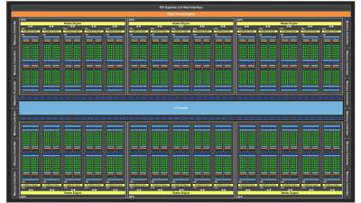
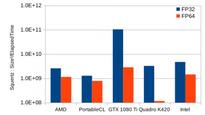
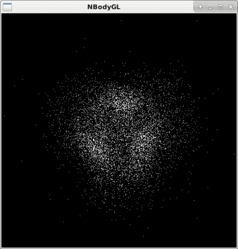

ETSN 2022 : les GPU, la technologie disruptive du 21ème siècle¶
Contient certainement encore un nombre non négligeable de coquilles… Merci de votre compréhension. Mon adresse de courriel est en bas pour vous permettre d’en assurer l’amélioration !
Cette session de travaux pratiques se compose de 7 séances de 1h30 du workshop Les GPU, technologie disruptive du 21ème siècle. Elle s’accompagne de 5 cours suivants donnés par Emmanuel Quémener.
Cours 1 & 2 : Les GPU : technologie disruptive du 21e siècle
Cours 3 : Portage d’un vieux code, l’occasion d’un retour sur 40 ans d’informatique
Cours 4 : Métrologie d’applications
CQQCOQP : Comment ? Qui ? Quand ? Combien ? Où ? Quoi ? Pourquoi ?¶
Pourquoi ? Faire un tour d’horizon des GPUs et appréhender des méthodes d’investigation
Quoi ? Programmer, tester et comparer les GPU sur des exemples simples pendant 6 séances de 1h30 heure
Quand ? Entre le 25 et le 29 juillet 2022
Combien ? Mesurer la performance que les GPUs offrent en comparaison des autres machines
Où ? Sur des stations de travail, des noeuds de cluster, des portables (bien configurés), dans des terminaux
Qui ? Pour les édudiants, enseignants, chercheurs, personnels techniques curieux
Comment ? En appliquant quelques commandes simples, généralement dans des terminaux.
But de la session¶
C’est de prendre en main les GPU dans les machines, d’appréhender la programmation en OpenCL et CUDA, de comparer les performances avec des CPU classiques par l’intermédiaire de quelques exemples simples et des codes de production.
Déroulement des sessions pratiques¶
Le programme est volontairement touffu mais les explications données et les corrigés devraient permettre de poursuivre l’apprentissage par la pratique hors de cette école d’une unique semaine.
Prise en main de l’environnement à distance du Centre Blaise Pascal à l”ENS-Lyon
Découverte du matériel, autant CPU que GPU
Exploration progressive en OpenCL avec l”exemple de base de la documentation Python/OpenCL
Un intermède Python/CUDA pour tester l’autre implémentation sur GPU
La réalisation et le portage d’une transformée de Fourier discrète
Choix du périphérique en Python et sa programmation
Utilisation des librairies externes : exemple avec xGEMM
Intégration de « codes métier » : TensorFlow, GENESIS et Gromacs
Expoitation de codes Matrices pour la métrologie
De manière à disposer d’une trace de votre travail et de pouvoir l’évaluer, il est recommandé de rédiger un « livre de bord » sur la base des questions posées. N’hésitez pas à faire des copies d’écran et à les intégrer dans votre document.
Démarrage de la session¶
Prérequis en matériel, logiciel et humain¶
De manière à proposer un environnement pleinement fonctionnel, le Centre Blaise Pascal fournit le matériel, les logiciels et un OS correctement intégré. Les personnes qui veulent réaliser cette session sur leur laptop doivent disposer d’un « vrai » système d’exploitation de type Unix, équipé de tout l’environnement adéquat.
Prérequis pour le matériel¶
Si vous n’utilisez PAS le CBP, une machine relativement récente avec une GPU intégrée avec circuit Nvidia
Si vous utilisez le CBP, un laptop disposant d’un écran assez confortable pour afficher une fenêtre de 1024x768, une connexion réseau la plus stable possible et la capacité d’y installer un logiciel adapté.
Prérequis pour le logiciel¶
Si vous n’utilisez pas le CBP, un OS GNU/Linux correctement configuré pour la GPU embarquée avec tous les composants Nvidia, OpenCL, PyOpenCL, PyCUDA.
Un “apt install time pciutils clinfo nvidia-opencl-icd nvidia-smi pocl-opencl-icd python3-pyopencl python-pyopencl-doc python-pycuda-doc python3-pycuda” devrait être suffisant comme prérequis pour une machine avec un circuit Nvidia pas trop ancien
Pour les implémentations OpenCL sur CPU sur Debian ou Ubuntu, essayez d’installer celle d”Intel et celle d”AMD. A votre environnement s’ajoute un navigateur pour voir cette page ainsi qu’un traitement de texte pour rédiger le compte-rendu de ces séances.
Si vous utilisez le CBP, il faut avoir installé le logiciel x2goclient suivant les recommandations de la documentation du CBP. Il est recommandé d’exploiter le traitement de texte et le navigateur dans la session distante.
Pour choisir « judicieusement » une machine parmi les plus de 130 de machines à disposition, consultez la page Cloud@CBP. Il est recommandé de prendre une machine disposant d’une GPU de type « Gamer » ou d’une « GPGPU ». Les sélecteurs de la page précédente peuvent vous aider dans ce choix. Coordonnez-vous entre vous pour être si possible chacun sur la vôtre. Ensuite, une fois connecté via x2go, il peut être intéressant de se connecter sur une autre machine de configuration différente pour comparer les résultats de vos expérimentations.
Etant donné la combinatoire des machines, leurs matériels respectifs et la galaxie des OS GNU/Linux et leurs versions, cela peut prendre de quelques minutes à plusieurs heures (voire jamais) de s’assurer de la compatibilité de sa machine avec le prérequis logiciel. Donc l’exploitation de l’environnement du CBP, exactement construit pour suivre ces travaux pratiques, est TRES FORTEMENT recommandée.
Prérequis pour l’humain¶
Une allergie à la commande en ligne peut dramatiquement réduire la portée de cette session pratique
Une pratique des scripts shell sera un avantage, sinon vous avez cette session pour parfaire vos connaissances.
Investiguer le matériel GPU¶
Qu’y a-t-il dans ma machine ?¶
Le matériel en Informatique Scientifique est défini par l’architecture de Von Neumann :
{kind=link}
CPU (Unité Centrale de Traitement) avec CU (Unité de Contrôle) et ALU (Unité Arithmétique & Logique)
MU (Unité de Mémoire)
Input and Output Devices : Périphériques d’Entrée et Sortie
Les GPU sont généralement considérés comme des périphériques d’Entrée/Sortie. Comme la plupart des périphériques installés dans les machines, elles exploitent un bus d’interconnexion PCI ou PCI Express.
Pour récupérer la liste des périphériques PCI, utilisez la commande “lspci -nn”. A l’intérieur d’une longue liste apparaissent quelques périphériques VGA ou 3D. Ce sont les périphériques GPU ou GPGPU.
Voici une sortie de la commande “lspci -nn | egrep “(VGA|3D)” “ :
3b:00.0 VGA compatible controller [0300]: NVIDIA Corporation GP102 [GeForce GTX 1080 Ti] [10de:1b06] (rev a1)
a1:00.0 VGA compatible controller [0300]: NVIDIA Corporation GK107GL [Quadro K420] [10de:0ff3] (rev a1)
Exercice #1.1: récuperez la liste des périphériques (GP)GPU
Combien de périphériques VGA sont listés ?
Combien de périphériques 3D sont listés ?
Récupérez le modèle du circuit de GPU, dans son nom étendu.
- Récupérez sur le web les informations suivantes pour chaque GPU :
le nombre d’unités de calcul (les « cuda cores » ou les « stream processors »)
la fréquence de base des coeurs de calcul
la fréquence de la mémoire
La (presque) totalité des stations de travail contiennent des cartes Nvidia.
Dans les systèmes Posix (Unix dans le langage courant), tout est fichier. Les informations sur les circuits Nvidia et leur découverte par le système d’exploitation peuvent être récupérées avec un grep dans la commande dmesg.
Si le démarrage de la machine n’est pas trop ancien, vous disposez des informations comparables aux suivantes :
[ 19.545688] NVRM: The NVIDIA GPU 0000:82:00.0 (PCI ID: 10de:1b06)
NVRM: NVIDIA Linux driver release. Please see 'Appendix
NVRM: A - Supported NVIDIA GPU Products' in this release's
NVRM: at www.nvidia.com.
[ 19.545903] nvidia: probe of 0000:82:00.0 failed with error -1
[ 19.546254] NVRM: The NVIDIA probe routine failed for 1 device(s).
[ 19.546491] NVRM: None of the NVIDIA graphics adapters were initialized!
[ 19.782970] nvidia-nvlink: Nvlink Core is being initialized, major device number 244
[ 19.783084] NVRM: loading NVIDIA UNIX x86_64 Kernel Module 375.66 Mon May 1 15:29:16 PDT 2017 (using threaded interrupts)
[ 19.814046] nvidia-modeset: Loading NVIDIA Kernel Mode Setting Driver for UNIX platforms 375.66 Mon May 1 14:33:30 PDT 2017
[ 20.264453] [drm] [nvidia-drm] [GPU ID 0x00008200] Loading driver
[ 23.360807] input: HDA NVidia HDMI/DP,pcm=3 as /devices/pci0000:80/0000:80:02.0/0000:82:00.1/sound/card2/input19
[ 23.360885] input: HDA NVidia HDMI/DP,pcm=7 as /devices/pci0000:80/0000:80:02.0/0000:82:00.1/sound/card2/input20
[ 23.360996] input: HDA NVidia HDMI/DP,pcm=8 as /devices/pci0000:80/0000:80:02.0/0000:82:00.1/sound/card2/input21
[ 23.361065] input: HDA NVidia HDMI/DP,pcm=9 as /devices/pci0000:80/0000:80:02.0/0000:82:00.1/sound/card2/input22
[ 32.896510] [drm] [nvidia-drm] [GPU ID 0x00008200] Unloading driver
[ 32.935658] nvidia-modeset: Unloading
[ 32.967939] nvidia-nvlink: Unregistered the Nvlink Core, major device number 244
[ 33.034671] nvidia-nvlink: Nvlink Core is being initialized, major device number 244
[ 33.034724] NVRM: loading NVIDIA UNIX x86_64 Kernel Module 375.66 Mon May 1 15:29:16 PDT 2017 (using threaded interrupts)
[ 33.275804] nvidia-nvlink: Unregistered the Nvlink Core, major device number 244
[ 33.993460] nvidia-nvlink: Nvlink Core is being initialized, major device number 244
[ 33.993486] NVRM: loading NVIDIA UNIX x86_64 Kernel Module 375.66 Mon May 1 15:29:16 PDT 2017 (using threaded interrupts)
[ 35.110461] nvidia-modeset: Loading NVIDIA Kernel Mode Setting Driver for UNIX platforms 375.66 Mon May 1 14:33:30 PDT 2017
[ 35.111628] nvidia-modeset: Allocated GPU:0 (GPU-ccc95482-6681-052e-eb30-20b138412b92) @ PCI:0000:82:00.0
[349272.210486] nvidia-uvm: Loaded the UVM driver in 8 mode, major device number 243
Exercice #1.2 : récupérez les informations de votre machine avec “dmesg | grep -i nvidia”
Quelle est la version de pilote chargée par le noyau ?
Que représente, s’il existe, le périphérique “input: HDA NVidia” ?
Est-ce un périphérique graphique ?
Le “lsmod” offre la liste des modules chargés par le noyau. Ces modules sont de petits programmes dédiés au support d’une fontion très spécifique du noyau, le moteur du système d’exploitation. Le support d’un périphérique nécessite souvent plusieurs modules.
Un exemple de “lsmod | grep nvidia” sur une station de travail :
nvidia_uvm 778240 0
nvidia_drm 40960 4
nvidia_modeset 1044480 3 nvidia_drm
nvidia 16797696 108 nvidia_modeset,nvidia_uvm
ipmi_msghandler 49152 1 nvidia
drm_kms_helper 155648 1 nvidia_drm
drm 360448 7 nvidia_drm,drm_kms_helper
Nous voyons que 4 modules sont chargés. La dernière colonne (vide pour les deux premières lignes) liste les dépendances entre les modules. Ici nvidia_modeset and nvidia_uvm dépendent du module nvidia.
Exercice #1.3 : récupérez les informations de l’hôte par la commande `lsmod | grep nvidia` :
Les informations sont-elles identiques à celles ci-dessus ? Caractère par caractère ?
Le périphérique apparaît également dans le dossier “/dev” (pour device), le dossier parent pour tous les périphériques.
Un “ls -l /dev/nvidia*” offre ce genre d’informations :
crw-rw-rw- 1 root root 195, 0 Jun 30 18:17 /dev/nvidia0
crw-rw-rw- 1 root root 195, 255 Jun 30 18:17 /dev/nvidiactl
crw-rw-rw- 1 root root 195, 254 Jun 30 18:17 /dev/nvidia-modeset
crw-rw-rw- 1 root root 243, 0 Jul 4 19:17 /dev/nvidia-uvm
crw-rw-rw- 1 root root 243, 1 Jul 4 19:17 /dev/nvidia-uvm-tools
Vous pouvez voir que chacun peut accéder au périphérique, à la fois en lecture ET en écriture (le “RW”). Ici, vous avez un seul périphérique Nvidia, “nvidia0”. Sur une machine disposant de plusieurs périphériques Nvidia, nous aurions : “nvidia0”, “nvidia1”, etc…
Exercice #1.4 : récupérez les informations de votre machine avec “ls -l /dev/* | grep -i nvidia”
Combien de “/dev/nvidia<number>” avez-vous ?
Cette information est-elle cohérente avec les 3 précédentes ?
Nvidia présente des informations sur l’usage instantané de ses circuits avec la commande “nvidia-smi”. Cette commande peut aussi être exploitée pour régler certains paramètres de la GPU.
Voici un exemple de sortie de la commande “nvidia-smi” :
Fri Jul 7 07:46:56 2017
+-----------------------------------------------------------------------------+
| NVIDIA-SMI 375.66 Driver Version: 375.66 |
|-------------------------------+----------------------+----------------------+
| GPU Name Persistence-M| Bus-Id Disp.A | Volatile Uncorr. ECC |
| Fan Temp Perf Pwr:Usage/Cap| Memory-Usage | GPU-Util Compute M. |
|===============================+======================+======================|
| 0 GeForce GTX 108... Off | 0000:82:00.0 On | N/A |
| 23% 31C P8 10W / 250W | 35MiB / 11172MiB | 0% Default |
+-------------------------------+----------------------+----------------------+
+-----------------------------------------------------------------------------+
| Processes: GPU Memory |
| GPU PID Type Process name Usage |
|=============================================================================|
| 0 4108 G /usr/lib/xorg/Xorg 32MiB |
+-----------------------------------------------------------------------------+
Beaucoup d’informations sont disponibles sur cette sortie :
version du pilote et du logiciel “nvidia-smi”
l’identifiant de chaque GPU
son nom
sa localisation sur le bus PCIe
sa vitesse de ventilateur
sa température
ses puissances : instantanée et maximale
ses « occupations » mémoire : instantanée et maximale
les processus les exploitant, leur consommation de mémoire et la GPU associée
Exercice #1.5 : récupérez les informations avec la commande “nvidia-smi”
Identifiez les caractéristiques ci-dessus et comparer les éléments
Combien de processus sont-ils listés ?
Comme nous l’avons vu dans l’introduction sur la GPU, leur programmation peut-être réalisée par différentes voies. La première, pour les périphériques Nvidia, est d’utiliser l’environnement CUDA. Le problème sera qu’il est impossible de réexploiter votre programme sur une autre plate-forme (une CPU) ou la comparer avec d’autres GPU. OpenCL reste une approche beaucoup plus polyvalente !
Sur les stations du CBP, la majorité des implémentations de OpenCL sont disponibles, autant sur CPU que sur GPU.
La commande “clinfo” récupère des informations liées à tous les périphériques OpenCL disponibles. Pour récupérer une sortie compacte, utilisez “clinfo “-l” “.
Tous les périphériques OpenCL sont présentés suivant une hiérarchie plateforme/périphérique (“Platform/Device”).
Voici une sortie de “clinfo “-l” “ pour une des stations de travail :
Platform #0: AMD Accelerated Parallel Processing
`-- Device #0: Intel(R) Xeon(R) CPU E5-2637 v4 @ 3.50GHz
Platform #1: Portable Computing Language
`-- Device #0: pthread-Intel(R) Xeon(R) CPU E5-2637 v4 @ 3.50GHz
Platform #2: NVIDIA CUDA
+-- Device #0: GeForce GTX 1080 Ti
`-- Device #1: Quadro K420
Platform #3: Intel(R) OpenCL
`-- Device #0: Intel(R) Xeon(R) CPU E5-2637 v4 @ 3.50GHz
“#0,#0” AMD Accelerated Parallel Processing : implémentation CPU de AMD, la plus ancienne, très proche de OpenMP en performances
“#1,#0” Portable Computing Language : implémentation CPU OpenSource. Pas vraiment efficace
“#2,#0” Nvidia CUDA : implémentation CUDA de Nvidia, périphérique 0, une GeForce GTX 1080 Ti
“#2,#1” Nvidia CUDA : implémentation CUDA de Nvidia, périphérique 1, une Quadro K420
“#3,#0” Intel(R) OpenCL : implémentation CPU Intel, plutôt très efficace
Ainsi, dans cette machine, 5 périphériques OpenCL sont accessibles, 3 permettent de s’adresser au processeur (vu pour le coup comme un périphérique) et 2 sont des GPU Nvidia.
Exercice #1.6 : récupérez les informations avec la commande “clinfo -l”
Identifiez et comparez votre sortie avec la liste ci-dessus
De combien de périphériques graphiques disposez-vous ?
L’appel de la commande “clinfo” fournit également de nombreuses informations. Cependant, il est impossible avec cette commande de ne récupérer les informations que d’un seul périphérique : la commande “egrep” permet alors de restreindre seulement certains attributs, par exemple “Platform Name”,”Device Name”,”Max compute”,”Max clock”
Sur la plateforme précédente, la commande “clinfo | egrep “(Platform Name|Device Name|Max compute|Max clock)” “ offre comme sortie:
Platform Name AMD Accelerated Parallel Processing
Platform Name Portable Computing Language
Platform Name NVIDIA CUDA
Platform Name Intel(R) OpenCL
Platform Name AMD Accelerated Parallel Processing
Device Name Intel(R) Xeon(R) CPU E5-2637 v4 @ 3.50GHz
Max compute units 16
Max clock frequency 1200MHz
Platform Name Portable Computing Language
Device Name pthread-Intel(R) Xeon(R) CPU E5-2637 v4 @ 3.50GHz
Max compute units 16
Max clock frequency 3501MHz
Platform Name NVIDIA CUDA
Device Name GeForce GTX 1080 Ti
Max compute units 28
Max clock frequency 1582MHz
Device Name Quadro K420
Max compute units 1
Max clock frequency 875MHz
Platform Name Intel(R) OpenCL
Device Name Intel(R) Xeon(R) CPU E5-2637 v4 @ 3.50GHz
Max compute units 16
Max clock frequency 3500MHz
Nous distinguons bien les éléments des 5 périphériques OpenCL déjà identifiés au-dessus (3 pour les 3 implémentations de CPU, respectivement d’AMD, PortableCL et Intel) et les deux GPU Nvidia (GTX 1080 Ti et Quadro K420).
Nous constatons par exemple que les nombres d’unités de traitement sont identiques pour les implémentations CPU (16) mais que leurs fréquences ne le sont pas (1200, 3501, 3500 MHz).
L’implémentation AMD récupère, elle, la fréquence instantanée, et les deux autres la fréquence maximale.
Pour les GPU, nous constatons que les fréquences sont bien inférieures à celles des GPU (1582 et 875 MHz).
Quant aux nombres d’unités de calcul (compute units), la première en dispose de 28 et la seconde de 1. Il sera donc intéressant de comparer ces valeurs par rapport aux valeurs trouvables dans les spécifications constructeur.
La notion d’unité de traitement (compute unit) pour les CPU n’est pas la même pour les GPU:
pour les CPU, c’est généralement le produit du nombre de coeurs physiques et du nombre de threads
pour les GPU, c’est le nombre de macro-unités de traitement : unité SM (pour Stream multiprocessor) chez Nvidia, unité CU (pour Compute Unit) chez AMD/ATI.
Ces unités de traitement disposent (autant pour les GPU que les CPU) d’unités arithmétiques et logiques (Arithmetic and Login Unit) lesquelles sont vraiment en charge du traitement des opérations.
Ainsi, le nombre d’ALU dans chaque Compute Unit varie de 64 à 192 selon les générations de GPU. Ainsi, pour le GPU ci-dessus GTX 1080 Ti, le nombre de Compute Unit mentionné est 28, et le nombre d’ALU (appelé également cuda core par Nvidia) est de 3584 soit 28*128. Le schéma du constructeur du circuit GP102 suivant est trompeur : en fait, il dispose de 30 unités SM, mais sur un GP102, seuls 28 sont activés.
Exercice #1.7 : récupérez les informations à l’aide de deux commandes précédentes utilisant “clinfo”
Comparez les informations entre les implémentations CPU. Pourquoi ces différences ?
Comparez le nombre d’unités de traitement des CPU avec celles du Web : Ark d’Intel
Comparez le nombre d’unités de traitement des GPU avec celles du Web : site spécifications de Nvidia ou Wikipedia
Comparez les fréquences identifiées avec celles trouvées sur le Web.
Retrouvez-vous une cohérence entre le nombre de Compute Units et le nombre de cuda cores ?
Combien de cuda cores contient chaque Compute Unit ?
Il est aussi possible de choisir quelle GPU Nvidia exploiter avec la variable d’environnement “CUDA_VISIBLE_DEVICES”. Il existe deux manières de l’exploiter :
en préfixant la commande à exécuter (ou son programme) par “CUDA_VISIBLE_DEVICES=#GPU”
en exportant la variable de manière permanente avec : “export CUDA_VISIBLE_DEVICES=#GPU”
La commande “nvidia-smi” offrait une liste de périphériques Nvidia identifiés mais les “ID” donnés sont dans l’ordre inverse de celui exigé par “CUDA_VISIBLE_DEVICES”. Par exemple, nvidia-smi donne comme ID les nombres 0 et 1.
# N'exploiter que la GPU identifie #0 avec nvidia-smi
CUDA_VISIBLE_DEVICES=1 <MonProgramme>
# N'exploiter que la GPU identifie #1 avec nvidia-smi
CUDA_VISIBLE_DEVICES=0 <MonProgramme>
# Exploiter les GPUs identifies #0 et #1 avec nvidia-smi
CUDA_VISIBLE_DEVICES=0,1 <MonProgramme>
# N'exploiter aucune GPU
CUDA_VISIBLE_DEVICES='' <MonProgramme>
Exercice #1.8 : récupérez les informations avec `clinfo -l` préfixée de CUDA_VISIBLE_DEVICES
Mettez CUDA_VISIBLE_DEVICES=0 clinfo -l et observez la sortie
Mettez CUDA_VISIBLE_DEVICES=1 clinfo -l et observez la sortie
Mettez CUDA_VISIBLE_DEVICES=0,1 clinfo -l et observez la sortie
Mettez CUDA_VISIBLE_DEVICES='' clinfo -l et observez la sortie
Avez-vous constaté la sélection des différents périphériques ?
Durant toutes les séances de travaux pratiques, l’accent sera mis sur la sollicitation de ressources matérielles, CPU ou GPU, lors des exécutions. Pour avoir une idée des ressources exploitées en temps réel sur la machine sollicitée, il est intéressant d’exploiter les commandes dstat et nvidia-smi (déjà connue) dans deux terminaux sur votre bureau à distance avec les options -cim pour la première et dmon pour la seconde.
Exercice #1.9 : lancez les commandes suivantes
Ouvrez un terminal, tapez
dstat -cimet observez la sortieDétaillez à quoi servent les paramètres de sortie
c,ietmOuvrez un terminal, tapez
nvidia-smi dmonet observez la sortieDétaillez à quoi sert l’option
dmonArrêtez l’exécution de la précédente avec
<Ctrl><C>Relancez la commande précédente avec
-d 0ou-d 1Détaillez à quoi sert l’option
-dsuivie d’un entier
Récupération des sources¶
La (presque) totalité des outils exploités par le CBP pour comparer les CPU et les GPU se trouve dans le projet bench4gpu du Centre Blaise Pascal.
La récupération des sources est libre et se réalise par l’outil subversion (NDLR : oui, je sais tout le monde est passé à GIT mais ce projet a plus de 10 ans) :
svn checkout https://forge.cbp.ens-lyon.fr/svn/bench4gpu/
Dans ce dossier bench4gpu, il y a plusieurs dossiers :
BLAScontenant les dossiersxGEMMetxTRSV: tests exploitant toutes les implémentations de librairies BLASEpidevomath: un prototype d’implémentation sur GPU d’un projet (abandonné)FFTcontenant une première exploitation de cuFFT (en suspens)Ising: implémentations multiples du modèle d’Ising en Python (multiples parallélisations)NBody: implémentation en OpenCL d’un modèle N-Corps newtonienPi: implémentation multiples d’un Pi Monte CarloSplutter: un modèle depostillonneur mémoire, très utile pour évaluer les fonctions atomiquesTrouNoir: un exemple de portage de code de 1994, porté en C en 1997 puis en Python/OpenCL et Python/CUDA en 2019ETSN: les programmes corrigés associés à cette école ETSN 2022
De tous ces programmes, seuls ceux présents dans BLAS, NBody, Pi et ETSN seront exploités dans le cadre de ces travaux pratiques. Il est quand même conseillé de ne pas se précipiter sur les corrigés situés dans ETSN pour le déroulement de ces séances. Le no pain, no gain s’applique aussi dans l’apprentissage en informatique.
Première exploration de l’association Python et OpenCL¶
Basons-nous pour ce premier programme sur celui présenté sur la documentation officielle de PyOpenCL. Il se propose d’ajouter deux vecteurs a_np et b_np en un vecteur res_np.
#!/usr/bin/env python
import numpy as np
import pyopencl as cl
a_np = np.random.rand(50000).astype(np.float32)
b_np = np.random.rand(50000).astype(np.float32)
ctx = cl.create_some_context()
queue = cl.CommandQueue(ctx)
mf = cl.mem_flags
a_g = cl.Buffer(ctx, mf.READ_ONLY | mf.COPY_HOST_PTR, hostbuf=a_np)
b_g = cl.Buffer(ctx, mf.READ_ONLY | mf.COPY_HOST_PTR, hostbuf=b_np)
prg = cl.Program(ctx, """
__kernel void sum(
__global const float *a_g, __global const float *b_g, __global float *res_g)
{
int gid = get_global_id(0);
res_g[gid] = a_g[gid] + b_g[gid];
}
""").build()
res_g = cl.Buffer(ctx, mf.WRITE_ONLY, a_np.nbytes)
knl = prg.sum # Use this Kernel object for repeated calls
knl(queue, a_np.shape, None, a_g, b_g, res_g)
res_np = np.empty_like(a_np)
cl.enqueue_copy(queue, res_np, res_g)
# Check on CPU with Numpy:
print(res_np - (a_np + b_np))
print(np.linalg.norm(res_np - (a_np + b_np)))
assert np.allclose(res_np, a_np + b_np)
Un programme aussi simple, que nous allons peu à peu modifier, va nous servir de socle pour explorer de nombreuses facettes de Python en général et l’exploitation des GPU en particulier.
En cas de succès à l’exécution, sur une machine du CBP, par exemple la machine gtxtitan, le programme demande d’abord de choisir une plateforme :
Choose platform:
[0] <pyopencl.Platform 'NVIDIA CUDA' at 0x288ab00>
[1] <pyopencl.Platform 'Portable Computing Language' at 0x14b6a4754008>
[2] <pyopencl.Platform 'AMD Accelerated Parallel Processing' at 0x14b69c602a18>
[3] <pyopencl.Platform 'Intel(R) OpenCL' at 0x2a47810>
Puis un périphérique (s’il y en a plusieurs) :
Choose device(s):
[0] <pyopencl.Device 'NVIDIA GeForce GTX TITAN' on 'NVIDIA CUDA' at 0x286dab0>
[1] <pyopencl.Device 'Quadro K420' on 'NVIDIA CUDA' at 0x289ef90>
Une fois le choix effectué, la sortie est la suivante :
Set the environment variable PYOPENCL_CTX='0:0' to avoid being asked again.
[0. 0. 0. ... 0. 0. 0.]
0.0
Ces choix et cette sortie nous rapportent au chapitre précédent lorsque nous avions exploité la commande “clinfo -l”. Nous avions vu que les périphériques OpenCL sont adressables par un tuple (plateforme,périphérique). Là, dans cet exemple, nous avons 2 périphériques Nvidia dont OpenCL nous donne les caractéristiques : GeForce GTX Titan et Quadro K420.
L’information importante ici est l’exploitation possible d’une variable d’environnement (“PYOPENCL_CTX”) pour sélectionner directement le périphérique à l’exécution. Par exemple, en préfixant l’exécution de PYOPENCL_CTX=0:1, nous sélectionnons la Quadro K420 et avec PYOPENCL_CTX=3 l’implémentation CPU de Intel Intel(R) OpenCL.
Nous verrons par la suite la possibilité de directement choisir le périphérique à l’intérieur même du code. Mais, cette opération étant un peu technique, nous nous contenterons de la variable d’environnement PYOPENCL_CTX préfixant la commande dans un premier temps.
Exercice #2.1 : première exécution
Exploitez un éditeur (par exemple gedit)
Copiez/Coller le contenu du programme source précédent
Enregistrez le source avec le nom
MySteps.pyLancez le avec et jugez de l’exécution :
python MySteps.pyLancez le avec et jugez de l’exécution :
python3 MySteps.pyChangez les droits d’exécution de
MySteps.pyLancez le directement avec
./MySteps.pyEn cas d’échec de lancement, modifiez
MySteps.py- Préfixez le lancement avec TOUTES les combinaisons de
PYOPENCL_CTX par exemple :
PYOPENCL_CTX=X:Y ./MySteps.py
- Préfixez le lancement avec TOUTES les combinaisons de
- Redirigez les sorties standards dans des fichiers
MySteps_XY.out (X,Y)sont définis comme les(plateforme,périphérique)Attention, s’il n’existe qu’un
Xet pas deY, spécifiez uniquementXEx.:
PYOPENCL_CTX=X:Y ./MySteps.py > MySteps_XY.out 2>&1
- Redirigez les sorties standards dans des fichiers
Cet exemple de démonstration va être profondément modifié pour le transformer en un code matrice, un exemple de base qu’il sera possible d’exploiter pour toute nouvelle exploration. Sa documentation interne devra être assez explicite pour comprendre toutes les parties.
Nous commençons d’abord par copier ce programme comme la strate 0 de notre apprentissage : nous avons désormais un MySteps_0.py dans le même dossier. Comme premières opérations, nous allons :
commenter le code en isolant les parties, notamment celles liées à OpenCL
extraire le processus natif de calcul dans une fonction
NativeAdditionextraire le processus OpenCL complet dans une fonction
OpenCLAdditionappeler la fonction
NativeAdditionpour trouver le résultatres_npappeler la fonction
OpenCLAdditionpour trouver le résultatres_clmodifier les tests avec les résultats
res_npetres_cl
En ne modifiant pas encore les sorties du programme (stdin et stdout), nous nous assurons que nous n’avons pas perturbé cette réorganisation interne du programme.
Le travail suivant va être d’effectuer les opérations précédentes sur MySteps_0.py afin d’obtenir les mêmes sorties (au caractère près) que celles que nous avons déjà obtenues.
Exercice #2.2 : modifier sans changer la sortie
Modifiez
MySteps_0.pysuivant les 6 spécifications ci-dessusExécutez le programme pour plusieurs périphériques
Sauvez pour chaque exécution la sortie standard
Comparez avec la commande
diffles sorties des exercices 2.1 et 2.2
L’étape suivante va permettre d’explorer le comportement du programme à la charge pour les différents types de périphériques, l’objectif étant de juger de l’intérêt du portage sur OpenCL en général ou sur GPU en particulier.
Le programme MySteps_1.py va intégrer les modifications suivantes :
la possibilité de passer en argument à l’exécution la taille des vecteurs
le temps d’exécution de la commande native
le temps d’exécution de la commande en OpenCL
une estimation de la vitesse d’exécution en natif pour différentes tailles
une estimation de la vitesse d’exécution en OpenCL pour différentes tailles
un ratio de performances entre mode natif et mode OpenCL
la libération des mémoires réservées dans le bloc
OpenCLAddition
Deux exécutions consécutives sur GPU et CPU permettront ainsi de visualiser le gain entre une exécution sur CPU et GPU.
Le passage de l’argument au programme exploitera la librairie standard sys.
Le temps d’exécution se basera sur un mécanisme très simple : l’exploitation de 2 timers, le premier avant l’exécution, le second après l’exécution. Ce timer est la fonction time() de la librairie standard time.
Pour libérer l’espace réservé sur le périphérique avec les opérations Buffer, il suffit d’appeler la fonction .release() en suffixe de la variable.
Par exemple, à la commande PYOPENCL_CTX=0:0 ./MySteps_1.py 1048576, l’exécution répond :
Size of vectors set to 1048576
NativeRate: 899396014
OpenCLRate: 2873687
OpenCLvsNative ratio: 0.003195
[0. 0. 0. ... 0. 0. 0.]
0.0
Sur le CPU avec l’implémentation Intel, la commande PYOPENCL_CTX=3 ./MySteps_1.py 1048576, l’exécution répond :
NativeRate: 916259689
OpenCLRate: 2517963
OpenCLvsNative ratio: 0.002748
[0. 0. 0. ... 0. 0. 0.]
0.0
Exercice #2.3 : instrumentation minimale du code
Modifiez
MySteps_1.pysuivant les 7 spécifications ci-dessusExécutez le programme pour des tailles de vecteurs de 2^15 à 2^30
sur la GPU la plus performante
sur l’implémentation CPU la plus efficace : l’Intel
Analysez dans quelles situations des problèmes de produisent :
Raccordez ces difficultés aux spécifications matérielles
Complétez un tableau avec ces résultats
Concluez sur l’efficacité de OpenCL dans ce cas d’exploitation
Par exemple, sur la machine gtxtitan (déjà un peu ancienne), nous avons le tableau de résultats suivant :
Pour la GPU la plus performante, la GTX Titan avec 6GB de RAM :
Size |
NativeRate |
OpenCLRate |
Ratio |
|---|---|---|---|
32768 |
892460736 |
25740 |
0.000029 |
65536 |
1150116765 |
213780 |
0.000186 |
131072 |
1232636354 |
420621 |
0.000341 |
262144 |
1329518292 |
871262 |
0.000655 |
524288 |
1353245080 |
1675102 |
0.001238 |
1048576 |
1007340016 |
3765737 |
0.003738 |
2097152 |
793727939 |
6654994 |
0.008384 |
4194304 |
621127212 |
13609238 |
0.021911 |
8388608 |
637941219 |
22441689 |
0.035178 |
16777216 |
650779100 |
39385219 |
0.060520 |
33554432 |
652256978 |
59400977 |
0.091070 |
67108864 |
629199642 |
82412411 |
0.130980 |
134217728 |
653140112 |
100425544 |
0.153758 |
268435456 |
650963845 |
111139487 |
0.170731 |
536870912 |
650737914 |
||
1073741824 |
644699087 |
||
Les cases vides ne sont pas des oublis : pour ces exécutions sur gtxtitan, le programme a planté. Dans notre cas, le message suivant s’affichait
Traceback (most recent call last):
File "/home/equemene/bench4gpu/ETSN/./MySteps_1.py", line 71, in <module>
res_cl=OpenCLAddition(a_np,b_np)
File "/home/equemene/bench4gpu/ETSN/./MySteps_1.py", line 38, in OpenCLAddition
knl(queue, a_np.shape, None, a_g, b_g, res_g)
File "/usr/lib/python3/dist-packages/pyopencl/__init__.py", line 887, in kernel_call
return self._enqueue(self, queue, global_size, local_size, *args, **kwargs)
File "<generated code>", line 8, in enqueue_knl_sum
pyopencl._cl.MemoryError: clEnqueueNDRangeKernel failed: MEM_OBJECT_ALLOCATION_FAILURE
Son origine était assez explicite avec le MEM_OBJECT_ALLOCATION_FAILURE renseignant sur un problème mémoire ou plus précisément sur un dépassement de capacité d’allocation mémoire sur le périphérique. Dans cet exemple, la GPU sélectionnée est une GTX Titan avec 6GB de RAM. Notre programme planet dès que la taille des vecteurs dépasse 2|29 éléments soit 536870912. Si nous définissons 3 vecteurs composés de 536870912 flottants sur 32 bits, cela représente tout juste 6 GiB mais la GPU ne dispose que d’exactement 6083 MiB. Il en manque à peine, mais il en manque suffisamment !
Pour la CPU en implémentation Intel :
Size |
NativeRate |
OpenCLRate |
Ratio |
|---|---|---|---|
32768 |
803736570 |
48080 |
0.000060 |
65536 |
1179733506 |
229426 |
0.000194 |
131072 |
1235406323 |
464793 |
0.000376 |
262144 |
1321528398 |
798832 |
0.000604 |
524288 |
1369254829 |
1753352 |
0.001281 |
1048576 |
1010348382 |
3357138 |
0.003323 |
2097152 |
788462981 |
7530766 |
0.009551 |
4194304 |
608452462 |
15324510 |
0.025186 |
8388608 |
529925025 |
22077438 |
0.041661 |
16777216 |
652698625 |
44634386 |
0.068384 |
33554432 |
646735880 |
52990227 |
0.081935 |
67108864 |
657396843 |
92453020 |
0.140635 |
134217728 |
650361835 |
115909284 |
0.178223 |
268435456 |
650222491 |
138080711 |
0.212359 |
536870912 |
649709195 |
151511835 |
0.233199 |
1073741824 |
655357107 |
153145848 |
0.233683 |
Des résultats, il est possible de voir que, sur une opération aussi simple qu’une addition, dans aucune situation l’implémentation OpenCL n’apporte le moindre intérêt. L’exécution native en Python est toujours plus rapide d’un facteur 4 sur CPU et d’un facteur 6 sur GPU.
Pire, sur GPU, sur une GTX Titan avec 6GB de RAM, le programme a planté. Ce cas d’usage montre dès à présent ce qu”IL NE FAUT PAS FAIRE quand on exploite OpenCL en général et les GPU en particulier.
Toutefois, intéressante consolation, nous notons que, lorsque nous augmentons la taille de nos vecteurs, la performance ne cesse d’augmenter pour les implémentations OpenCL :
Utiliser OpenCL, autant sur CPU que sur GPU, exige : un nombre d’éléments sur lesquels s’exécutent les opérations élémentaires est conséquent en fonction du périphérique de calcul (de plusieurs milliers à plusieurs millions) ; un nombre d’opérations élémentaires à effectuer pour chaque élément d’une densité arithmétique « suffisante » (supérieures à la dizaine).
Pour juger de ces deux caractéristiques, nous allons non pas faire une simple addition de deux vacteurs mais une addition de ces deux vecteurs où chaque élément aura subi un ensemble d’opérations arithmétiques significatives.
Partons donc de notre programme précédent MySteps_1.py et copions le dans le programme MySteps_2.py.
Nous allons intégrer dans ce programme la fonction empilant successivement les 16 opérations suivantes : cos, arccos, sin, arcsin, tan, arctan, cosh, arccosh, sinh, arcsinh, tanh, arctanh, exp, log, sqrt et enfin élévation à la puissance 2. Comme notre générateur de nombres aléatoires tire entre 0 et 1, nous devrions retrouver notre nombre initial (modulo les approximations).
Cette fonction, nommée MySillyFunction devra être intégrée en Python natif et dans le noyau OpenCL. Lors de l’addition des deux vecteurs, nous appliquerons cette fonction aux éléments de a et b avant leur addition.
De plus, de manière à juger plus finement des opérations nécessaires en OpenCL, nous allons intrumenter la fonction d’appel pour juger du temps passé à l’exécution dans chacune d’elle.
Ainsi, les modifications du programme à effectuer sont les suivantes :
dans la fonction
OpenCLAddition, rajouter des timers sur chaque opérationdans la fonction précédente, préfixez l’appel du noyau OpenCL par la variable
CallCLdans la fonction précédente, rajoutez la ligne
CallCL.wait()la ligne sous la ligne précédenteintégrer la fonction
MySillyFunctionen python avec les 16 opérations suivant la liste ci-dessus
exploiter au besoin la documentation Python de la librairie numpy
rajouter la fonction
NativeSillyAdditionappliquantMySillyFunctiondans le programmeintégrer la fonction
MySillyFunctiondans le noyau OpenCL avec les 16 opérations
exploiter au besoin la carte de référence OpenCL
rajouter la fonction
sillysumsur la base desumdans le noyau OpenCLrajouter la fonction
OpenCLSillyAdditionsur la base deOpenCLAdditiondans le programme
Exercice #2.4 :
Modifiez
MySteps_2.pysuivant les 8 spécifications ci-dessus- Exécutez le programme pour une taille de 32 (soit 2|5)
sur la GPU la plus performante
sur l’implémentation CPU la plus efficace : l’Intel
Sauvegardez la sortie des deux exécutions précédentes
Reexécutez les deux exécutions précédentes
Sauvegardez la sortie des deux exécutions
Que constatez-vous sur la durée de la synthèse OpenCL
- Exécutez le programme pour des tailles de vecteurs de 32 à 33554432
sur la GPU la plus performante
sur l’implémentation CPU la plus efficace : l’Intel
Analysez dans quelles situations des problèmes de produisent
Complétez un tableau avec ces résultats
Le premier problème rencontré lors de l’exécution génère les lignes comparables à :
Traceback (most recent call last):
File "/home/equemene/bench4gpu/ETSN/./MySteps_2.py", line 189, in <module>
assert np.allclose(res_np, res_cl)
AssertionError
Cette erreur provient du contrôle numpy.allclose du programme originel sur la comparaison entre résultats en mode natif et OpenCL. Comme le budget d’erreur est dépassé, une exception est levée. Etant donné l’accumulation des fonctions et que nous travaillons (pour l’instant) sur des nombres flottants sur 32 bits, entre 0 et 1, une erreur de inférieur à 1e-6 reste acceptable, mais il faut considérer qu’avec un grand nombre d’éléments, l’erreur cumulée devient significative sur l’ensemble du vecteur. Commenter cette ligne sera salutaire dans la suite.
Sur la comparaison entre les durées de synthèse OpenCL, nous constatons que la première exécution est toujours plus longue que la seconde. Sur notre machine référence, nous passons de 0.636s à 0.017s sur GPU (facteur 37) et de 0.1 à 0.018 (facteur 5). Cette différence vient du fait qu’entre les exécutions, les noyaux OpenCL n’ont pas changé : il n’y a pas lieu de refaire la synthèse des noyaux pour chaque périphérique. Ces éléments sont stockés dans $HOME/.cache/pyopencl. Il est donc nécessaire, sur de très gros noyaux OpenCL ou dans des tests de métrologie, de regarder ces temps de synthèse face aux temps d’exécution des noyaux.
Par exemple, sur la machine gtxtitan (déjà un peu ancienne), nous avons le tableau de résultats suivant :
Pour la GPU la plus performante, la GTX Titan avec 6GB de RAM :
Size |
NativeRate |
OpenCLRate |
Ratio |
|---|---|---|---|
32 |
248551 |
83 |
0.000334 |
64 |
429496 |
207 |
0.000482 |
128 |
662803 |
407 |
0.000614 |
256 |
842811 |
802 |
0.000952 |
512 |
923648 |
1668 |
0.001806 |
1024 |
1087884 |
3351 |
0.003080 |
2048 |
1140761 |
6712 |
0.005884 |
4096 |
1177025 |
13102 |
0.011131 |
8192 |
1210276 |
26014 |
0.021494 |
16384 |
1225470 |
60982 |
0.049762 |
32768 |
1220627 |
101652 |
0.083279 |
65536 |
1217372 |
215666 |
0.177157 |
131072 |
1232780 |
414668 |
0.336368 |
262144 |
1231938 |
883214 |
0.716931 |
524288 |
1374541 |
1889005 |
1.374281 |
1048576 |
1535449 |
3529675 |
2.298790 |
2097152 |
1523263 |
6720366 |
4.411823 |
4194304 |
1473851 |
12703168 |
8.619031 |
8388608 |
1479566 |
21404615 |
14.466820 |
16777216 |
1482238 |
36276007 |
24.473807 |
33554432 |
1484349 |
52485826 |
35.359492 |
Pour la CPU en implémentation Intel :
Size |
NativeRate |
OpenCLRate |
Ratio |
|---|---|---|---|
32 |
280790 |
98 |
0.000349 |
64 |
426765 |
243 |
0.000569 |
128 |
627919 |
435 |
0.000693 |
256 |
886657 |
936 |
0.001056 |
512 |
953166 |
1837 |
0.001927 |
1024 |
1082128 |
3099 |
0.002864 |
2048 |
1157829 |
6770 |
0.005847 |
4096 |
1183023 |
14486 |
0.012245 |
8192 |
1211043 |
27500 |
0.022708 |
16384 |
1228735 |
55910 |
0.045502 |
32768 |
1217685 |
101244 |
0.083145 |
65536 |
1222027 |
239095 |
0.195654 |
131072 |
1228707 |
410382 |
0.333995 |
262144 |
1231937 |
815420 |
0.661901 |
524288 |
1344654 |
1754317 |
1.304661 |
1048576 |
1318155 |
3223043 |
2.445117 |
2097152 |
1478456 |
6306681 |
4.265721 |
4194304 |
1527815 |
9490882 |
6.212062 |
8388608 |
1484125 |
14247142 |
9.599691 |
16777216 |
1482704 |
19512883 |
13.160336 |
33554432 |
1474004 |
22517796 |
15.276618 |
Nous constatons que le gain du passage en OpenCL est significatif, autant sur CPU que sur GPU, si la taille des objets approche le million. Nous avons une accélération de 15 pour le CPU et de 35 sur GPU. En augmentant la charge très significativement (par exemple en n’appelant pas seulement une fois MySillyFunction mais 4 fois à la suite, le gain sur CPU passe à 21 tandis qu’il dépasse les 127 sur cette GPU !
De plus, quand nous regardons les durées d’exécution des noyaux en OpenCL, elles sont presque marginales. Ainsi, pour qu’une exécution OpenCL soit efficace, il faudra veiller à ce que le temps d’exécution soit bien supérieur aux autres durées telles que les transferts de données entre hôte et périphérique ou l’initialisation du périphérique de calcul. Le programme PiXPU.py illustre de manière parfaite cet équilibre à établir sur le nombre de tâches concurrentielles à lancer et la profondeur calculatoire (ou l”intensité arithmétique) de chaque noyau.
Un intermède CUDA et son implémentation PyCUDA¶
Nvidia a ressenti tôt la nécessité d’offrir une abstraction de programmation simple pour ses GPU. Elle a même sorti cg-toolkit dès 2002. Il faudra attendre l’été 2007 pour un langage complet, seulement limité à quelques GPU de sa gamme.
Aujourd’hui, CUDA est omniprésent dans les librairies du constructeur mais aussi dans l’immense majorité des autres développements. Cependant, son problème vient de l’adhérence au constructeur : CUDA ne sert QUE pour Nvidia. Nous verrons que CUDA a aussi d’autres inconvénient, mais à l’usage.
L’impressionnant Andreas Kloeckner a aussi développé, en plus de PyOpenCL, PyCUDA pour exploiter CUDA à travers Python avec des approches : c’est PyCUDA.
L’exemple de la page précédente ressemble fortement à celui que nous modifions depuis le début de nos travaux pratiques. Nous allons l’exploiter pour intégrer cette implémentation CUDA dans notre programme MySteps_3.py (copie de MySteps_2.py).
Les modifications du programme MySteps_3.py sont les suivantes :
créer une fonction Python
CudaAdditionintégrer les lignes de l’exemple de PyCUDA notamment
l’appel des librairies Python
le noyau CUDA où la multiplication a été remplacée par l’addition
la création du vecteur destination
l’appel de l’addition
entourer avec une exception le
allclosecette précaution permet d’empêcher un plantage
dupliquer et adapter à CUDA les éléments de contrôle de cohérence des résultats
Exercice #3.1 :
- Modifiez MySteps_3.py suivant les 3 spécifications ci-dessus
- Exécutez le programme pour des tailles de vecteurs de 32 à 32768
- Analysez dans quelles situations des problèmes de produisent
- Raccordez ces difficultés aux spécifications matérielles
- Complétez un tableau avec ces résultats
- Concluez sur l’efficacité de CUDA dans ce cas d’exploitation
Size |
NativeRate |
OpenCL Rate |
CUDA Rate |
|---|---|---|---|
32 |
2982616 |
84 |
24 |
64 |
5592405 |
196 |
70 |
128 |
12485370 |
404 |
138 |
256 |
21913098 |
789 |
270 |
512 |
45691141 |
1652 |
535 |
1024 |
84215045 |
3153 |
1143 |
2048 |
156180628 |
6097 |
|
4096 |
286331153 |
14923 |
|
8192 |
483939977 |
25544 |
|
16384 |
694136128 |
49892 |
|
32768 |
947854851 |
101677 |
|
Normalement, si l’implémentation a été correcte, la partie CUDA fonctionne pour les tailles de vecteurs inférieures ou égales à 1024… Cette limitation est en fait dûe à une mauvaise utilisation de CUDA. En effet, CUDA (et dans une moindre mesure OpenCL) comporte 2 étages de parallélisation. Sous OpenCL, ces étages sont les Work Items et les Threads. Sous CUDA, ces étages sont les Blocks et les Threads. Hors, dans les deux approches OpenCL et CUDA, l’étage de parallélisation Threads est l’étage le plus fin, destiné à paralléliser des exécutions éponymes de la programmation parallèle. Mais, comme dans leurs implémentations sur processeurs, la parallélisation par Threads exige une « synchronisation ». Sous les implémentations CUDA et OpenCL, le nombre de threads maximal sollicitable dans un appel est seulement 1024 !
Cette limitation de 1024 Threads entre en contradiction avec le cadre d’utilisation présenté sur les GPU qui veut que le nombre de tâches équivalentes à exécuter est de l’ordre d’au moins plusieurs dizaines de milliers. Donc, il ne faut pas, dans un premier temps, exploiter les Threads en CUDA mais les Blocks.
Il faudra donc modifier le programme MySteps_4.py (copie de MySteps_3.py fonctionnel mais inefficace) pour exploiter les Blocks. Les modifications sont les suivantes :
remplacer
threadIdxparblockIdxdans le noyau CUDAremplacer dans l’appel de
sum:block=(a_np.size,1,1)parblock=(1,1,1)remplacer dans l’appel de
sum:grid=(1,1)pargrid=(a_np.size)
Exercice #3.2 :
Modifiez
MySteps_4.pysuivant les 3 spécifications ci-dessusExécutez le programme pour des tailles de vecteurs de 32768 à 268435456
Analysez dans quelles situations des problèmes de produisent
Raccordez ces difficultés aux spécifications matérielles
Complétez un tableau avec ces résultats
Concluez sur l’efficacité de CUDA dans ce cas d’exploitation
Size |
NativeRate |
OpenCL Rate |
CUDA Rate |
|---|---|---|---|
32768 |
910191744 |
93081 |
31182 |
65536 |
1150116765 |
199750 |
71033 |
131072 |
1221679586 |
455109 |
165674 |
262144 |
1337605386 |
793248 |
280624 |
524288 |
1397980454 |
1572131 |
570096 |
1048576 |
1069824011 |
3060792 |
1116513 |
2097152 |
775327723 |
5831761 |
2246784 |
4194304 |
517143454 |
11881835 |
4384631 |
8388608 |
642015438 |
24217467 |
8813252 |
16777216 |
629968524 |
39845498 |
17001502 |
33554432 |
645555196 |
57715607 |
29982747 |
67108864 |
650246900 |
80830493 |
50612097 |
134217728 |
654420232 |
99003136 |
75783432 |
268435456 |
656531263 |
111858992 |
91297615 |
Nous constatons normalement, avec la sollicitation des blocks et plus des threads, l’implémentation CUDA fonctionne quelle que soit la taille sollicitée. L’implémentation CUDA rattrape l’OpenCL sans jamais la dépasser mais elle reste indigente en comparaison avec la méthode native, mais nous avons déjà vu pourquoi : problème de complexité arithmétique.
Nous allons donc, comme pour OpenCL, augmenter l’intensité arithmétique du traitement en rajoutant l’implémentation CUDA de notre fonction MySillyFunction ajoutée à chacun des termes des vecteurs avant leur addition.
Pour il convient de modifier le code MySteps_5.py (copie de MySteps_4.py) de la manière suivante :
copier l’implémentation PyCUDA
CUDAAdditionenCUDASillyAdditioncette nouvelle fonction Python sera à modifier pour la suite
rajouter la fonction interne
MySillyFunctiondans le noyau CUDAune fonction interne doit être préfixée par
__device__
rajouter la fonction
sillysumappelée par Python dans le noyau CUDArajouter la synthèse de la fonction
sillysumcomparable àsummodifier l’appel de la fonction PyCUDA de
sumensillysumintrumenter temporellement chaque ligne de
CUDASillyAdditionmodifier les appels de fonction
AdditionenSillyAdditionpour les 3 implémentations
Native,OpenCLetCUDA
Exercice #3.3 :
Modifiez
MySteps_5.pysuivant les 7 spécifications ci-dessusExécutez le programme pour des tailles de vecteurs de 32768 à 268435456
Complétez un tableau avec ces résultats
Concluez sur l’efficacité de CUDA dans ce cas d’exploitation
Size |
NativeRate |
OpenCL Rate |
CUDA Rate |
OpenCL ratio |
CUDA ratio |
|---|---|---|---|---|---|
32768 |
1220822 |
104351 |
29276 |
0.085476 |
0.023981 |
65536 |
1220648 |
209305 |
69271 |
0.171470 |
0.056749 |
131072 |
1230476 |
393187 |
140255 |
0.319541 |
0.113984 |
262144 |
1248695 |
884181 |
298047 |
0.708084 |
0.238687 |
524288 |
1447905 |
1790726 |
574288 |
1.236770 |
0.396634 |
1048576 |
1444680 |
3401922 |
1118288 |
2.354793 |
0.774073 |
2097152 |
1484030 |
6988430 |
2056560 |
4.709089 |
1.385794 |
4194304 |
1525560 |
13208467 |
3606081 |
8.658110 |
2.363775 |
8388608 |
1478514 |
22047721 |
5106220 |
14.912081 |
3.453616 |
16777216 |
1484119 |
37736167 |
7228717 |
25.426645 |
4.870713 |
33554432 |
1484581 |
54005921 |
9291681 |
36.377888 |
6.258790 |
67108864 |
1484264 |
75264794 |
10552401 |
50.708495 |
7.109518 |
134217728 |
1486942 |
85222066 |
11352687 |
57.313645 |
7.634923 |
268435456 |
1485632 |
102563944 |
12149328 |
69.037247 |
8.177885 |
Les gains sont substantiels en CUDA mais restent quand même bien en dessous de OpenCL. Pour augmenter l’efficacité de CUDA, il conviendra d’augmenter la complexité arithmétique de manière très substantielle. Par exemple, en multipliant par 16 cette complexité (en appelant par exemple 16 fois successivement cette fonction MySillyFunction), le NativeRate se divise par 16 mais le OpenCLRate ne se divise que par 2. L’implémentation CUDA, quand à elle, augmente de 60% !
Pour conclure sue ce petit intermède CUDA se trouvent les programmes MySteps_5b.py et MySteps_5c.py dérivés de MySteps_5.py :
MySteps_5b.py: intègre une utilisation hybride des Blocks et des ThreadsMySteps_5c.py: augmente la complexité arithmétique d’un facteur 16
Implémenter une fonction « coûteuse », la Transformée de Fourier¶
L’objectif ici n’est pas de concurrencer une implémentation de la FFT, par ailleurs très bien implémentée en Python natif. Le dessein est plutôt d’illustrer l’exploitation d’un des programmes précédents comme matrice de manière à construire ce programme.
La Transformée de Fourier discrète est omniprésente en traitement du signal. Elle permet notamment des opérations de filtrage plus efficaces que les convolutions directes.
Le lien Wikipedia contient tout ce qui est nécessaire à l’implémentation de votre propre TF d’abord en Python « naïf », puis en Python Numpy, ensuite en Python PyOpenCL et enfin en Python CUDA.
Comme le veut la tradition, la DFT s’applique sur un vecteur complexe comprenant donc parties réelle et imaginaire et offre un résultat dans l’espace complexe. Les vecteurs a_np et b_np seront donc respectivement les parties réelles et imaginaires de notre vecteur d’entrée.
Pour cela, nous partons de MySteps_5.py que nous copions en MyDFT_1.py. Nous pouvons dans un premier temps commenter toutes les parties que nous ne comptons pas exploiter, ou simplement ne pas les appeler dans la fin du programme.
Pour des valeurs réelles et imaginaires fixées à 1 dans le vecteur complexe, les valeurs théoriques de leur DFT sont :
identiques pour les parties réelles et imaginaires
égales à 1 pour le premier élément
égales à 0 pour les autres termes
Ainsi, pour implémenter une DFT « naïve », nous devons :
- commenter toutes les parties inutiles du programme MyDFT_1.py
- initialiser les vecteurs a_np et b_np à 1
- initialiser les vecteurs C_np et D_np résultats (ou références)
- créer une fonction Python MyDFT
arguments
xetyrésultats
XetY
implémenter la DFT à base d’itérateurs
appeler la fonction
MyDFTavec :arguments
a_npetb_nprésultats
c_npetd_np
imprimer la somme des différences normalisées
entre
c_npetC_npentre
d_npetD_np
Il sera alors possible d’estimer l’erreur numérique à ce calcul.
Exercice #4.1 : implémentation Python « naïve »
Modifiez
MyDFT_1.pysuivant les 7 spécifications ci-dessusExécutez le programme pour une taille de 16 et contrôler la cohérence
Exécutez le programme pour des tailles de vecteurs de 16 à 4096
Placez dans un tableau la performance
Si tout va bien, les vecteurs résultats présentent une valeur comparable à la taille du vecteur sur le premier élément et une valeur « proche » de 0 ailleurs. Pour une DFT appliquée sur un vecteur de 1024 éléments, la sortie est la suivante :
Size of vectors set to 1024
NativeRate: 23
Precision: 6.975449e-05 6.9193055e-05
La double-itération est particulièrement coûteuse en terme de calcul. La seconde implémentation va exploiter les fonctions broadcast de Numpy pour éviter cette double-boucle en la limitant à une seule boucle.
Pour cela, il est proposé de :
copier la fonction
NumpyDFTsur le modèle deMyDFTdans cette nouvelle fonction, réaliser les opérations suivantes :
créer un vecteur
njcorrespondant à l’argument des cos et sin divisé par il’exploitation de
numpy.multiplyest suggérée
créer l’élément
X[i]par l’enchaînement des opérations :produit de cos(i*nj) à x
produit de sin(i*nj) à x
soustraction des deux résultats précédents
somme de l’ensemble des éléments
créer l’élément
Y[i]par l’enchaînement des opérations :produit de sin(i*nj) à x
produit de cos(i*nj) à x
addition des deux résultats précédents
somme de l’ensemble des éléments
appeler la fonction
NumpyDFTavec les mêmes argumentscomparer les résultats entre les deux avec
linalg.norm
Exercice #4.2 : implémentation Python Numpy
Copiez le programme
MyDFT_1.pyenMyDFT_2.pyModifiez
MyDFT_2.pysuivant les 7 spécifications ci-dessusExécutez le programme pour une taille de 1024 et contrôler la cohérence
Exécutez le programme pour des tailles de vecteurs de 16 à 4096
Placez dans un tableau la performance
Nous constatons que l’exploitation des fonctions broadcast est infiniment plus efficace que l’implémentation naïve. Cependant, une observation des résultats laisse un tantinet perplexe sur la précision des opération. En effet, pour une exécution sur des vecteurs de tail 1024, nous avons :
Size of vectors set to 1024
Performing naive implementation
NativeRate: 23
Precision: 6.975449e-05 6.9193055e-05
Performing Numpy implementation
NumpyRate: 8030
Precision: 0.08201215 0.0809835
Les résultats par la méthode naïve semblent être plus précis (attention cependant, nous avons forcé les calculs sur des flottants 32 bits). Cela suggère qu’un contrôle calculatoire est plus que jamais nécessaire, quelle que soit la méthode exploitée, en Python ou autre.
L’utilisation de Numba offre une possibilité de parallélisation comparable à OpenMP. Avec une directive préfixant la fonction et quelques modifications, il est possible (normalement simplement) de paralléliser l’exécution d’une boucle sur plusieurs coeurs voire envoyer l’exécution de la boucle sur un périphérique externe. Nous l’utiliserons que la parallélisation sur plusieurs coeurs.
Dans notre cas, il suffira de :
importer la librairie numba :
import numbapréciser l’appel du décorateur sur CPU :
@numba.njit(parallel=True)changer le domaine d’itération pour la boucle :
range()parnumba.prange()
Exercice #4.3 : implémentation Python Numpy
Copiez le programme
MyDFT_2.pyenMyDFT_3.pyet exploitez ce dernierCopiez la fonction
NumpyDFTenNumbaDFTIntégrez les deux lignes intégrant numba
Dupliquez l’appel de
NumpyDFTpour appelerNumbaDFTRajoutez un comparateur de résultats avec le mode natif
Exécutez le programme pour une taille de 1024 et contrôler la cohérence
Exécutez le programme pour des tailles de vecteurs de 16 à 4096
Placez dans un tableau la performance
Les résultats ont de quoi laisser effectivement perplexe… L’implémentation avec Numba semble plus lente que l’implémentation Numpy qu’elle exploite !
Size of vectors set to 1024
Performing naive implementation
NativeRate: 22
Precision: 6.975449e-05 6.9193055e-05
Performing Numpy implementation
NumpyRate: 8157
Precision: 0.08201215 0.0809835
Performing Numba implementation
/usr/lib/python3/dist-packages/numba/np/ufunc/parallel.py:365: NumbaWarning: The TBB threading layer requires TBB version 2019.5 or later i.e., TBB_INTERFACE_VERSION >= 11005. Found TBB_INTERFACE_VERSION = 7001. The TBB threading layer is disabled.
warnings.warn(problem)
NumbaRate: 393
Precision: 0.065024495 0.059959255
Nous disposons également d’un message d’erreur mais pas vraiment grave… Ca fonctionne quand même ;-)
Pour l’implémentation OpenCL, la version « naïve » de l’implémentation va servir. Pour cela, il suffit de reprendre la définition de la méthode naïve et de l’implémenter en C dans un noyau OpenCL. A noter que Pi n’étant dans une variable définie, il faut explicitement la détailler dans le noyau OpenCL. Autre détail important : le cast. De manière a éviter tout effet de bord, il est fortement recommandé de caster les opérations dans la précision flottante souhaitée pour des opérations sur des indices entiers.
Exercice #4.4 : implémentation Python OpenCL
Copiez le programme
MyDFT_3.pyenMyDFT_4.pyet exploitez ce dernierCopiez la fonction python
OpenCLAdditionenOpenCLDFTSur la base de la fonction noyau
sum, créer la fonctionMyDFTIntégrez la valeur de PI en début de noyau OpenCL
Modifiez les allocations pour la sortie de la fontion OpenCL
MyDFTModifiez la synthèse du noyau OpenCL
Modifiez l’exécution du noyau OpenCL avec
MyDFTAdaptez les transferts de périphérique vers l’hôte
Appelez la fonction
OpenCLDFTdans la routineInhibez l’implémentation « naïve » trop inefficace
Exécutez le programme pour une taille de 1024 et contrôler la cohérence
Exécutez le programme sur CPU pour des tailles de vecteurs de 64 à 65536
Exécutez le programme sur GPU pour des tailles de vecteurs de 64 à 65536
Placez dans un tableau la performance
Sur la base d’une DFT appliquée sur un vecteur complexe de 1024 éléments avec comme périphérique OpenCL l’implémentation Intel, nous avons la sortie suivante :
Size of vectors set to 1024
Performing Numpy implementation
NumpyRate: 6282
Precision: 0.08201215 0.0809835
Performing Numba implementation
/usr/lib/python3/dist-packages/numba/np/ufunc/parallel.py:365: NumbaWarning: The TBB threading layer requires TBB version 2019.5 or later i.e., TBB_INTERFACE_VERSION >= 11005. Found TBB_INTERFACE_VERSION = 7001. The TBB threading layer is disabled.
warnings.warn(problem)
NumbaRate: 356
Precision: 0.065024495 0.059959255
Copy from Host 2 Device : 0.000
Building kernels : 0.013
Allocation on Host for results : 0.000
Allocation on Device for results : 0.000
Synthesis of kernel : 0.005
Execution of kernel : 0.007
Copy from Device 2 Host : 0.000
OpenCLRate: 3306
Precision: 6.966685e-05 6.9132504e-05
La précision en OpenCL est comparable à la méthode native, bien meilleure que les méthodes Python Numpy ou Numba. La performance est en deça de la méthode Numpy. Par contre, dès que les vecteurs dépassent une certaine taille (8192 avec Numba et 2048 avec OpenCL), Numpy est largement battu.
Avec l’implémentation OpenCL Intel sur CPU :
Size |
NumpyRate |
NumbaRate |
OpenCL Rate |
|---|---|---|---|
64 |
15225 |
24 |
186 |
128 |
17045 |
55 |
477 |
256 |
14199 |
112 |
926 |
512 |
8361 |
218 |
1820 |
1024 |
7980 |
440 |
1550 |
2048 |
4308 |
865 |
7945 |
4096 |
2894 |
1626 |
12810 |
8192 |
1584 |
2565 |
18533 |
16384 |
852 |
2223 |
22087 |
32768 |
435 |
2143 |
16604 |
65536 |
221 |
1212 |
9497 |
Avec l’implémentation OpenCL sur GPU :
Size |
NumpyRate |
NumbaRate |
OpenCL Rate |
|---|---|---|---|
64 |
15117 |
25 |
204 |
128 |
14398 |
54 |
463 |
256 |
15201 |
111 |
948 |
512 |
8860 |
201 |
1866 |
1024 |
8061 |
441 |
3786 |
2048 |
4605 |
874 |
5968 |
4096 |
2892 |
1628 |
12852 |
8192 |
1617 |
2636 |
19731 |
16384 |
848 |
2884 |
24280 |
32768 |
433 |
2032 |
20077 |
65536 |
220 |
1217 |
11054 |
Reste maintenant l’implémentation CUDA sur la base de ce qui a déjà été fait dans l’exercice 3.4.
Il faudra, comme pour l’implémentation OpenCL, veiller à :
intégrer la valeur de PI comme constante
modifier les vecteurs en sortie (2 vecteurs)
Exercice #4.5 : implémentation Python CUDA
Copiez le programme
MyDFT_4.pyenMyDFT_5.pyet exploitez ce dernierCopiez la fonction python
CUDAAdditionenCUDADFTSur la base de la fonction noyau
sum, créer la fonctionMyDFTIntégrez la valeur de PI en début de noyau OpenCL
Modifiez les allocations pour la sortie de la fontion CUDA
MyDFTModifiez la synthèse du noyau CUDA
Modifiez l’exécution du noyau CUDA avec
MyDFTAppelez la fonction
CUDADFTdans la routineExécutez le programme pour une taille de 1024 et contrôler la cohérence
Exécutez le programme sur GPU pour des tailles de vecteurs de 64 à 65536
Placez dans un tableau la performance
Pour l’exécution de la DFT sur vecteur complexe de 1024 éléments sur GPU, nous avons comme sortie :
Size of vectors set to 1024
Performing Numpy implementation
NumpyRate: 6344
Precision: 0.08201215 0.0809835
Performing Numba implementation
/usr/lib/python3/dist-packages/numba/np/ufunc/parallel.py:365: NumbaWarning: The TBB threading layer requires TBB version 2019.5 or later i.e., TBB_INTERFACE_VERSION >= 11005. Found TBB_INTERFACE_VERSION = 7001. The TBB threading layer is disabled.
warnings.warn(problem)
NumbaRate: 416
Precision: 0.065024495 0.059959255
Copy from Host 2 Device : 0.000
Building kernels : 0.010
Allocation on Host for results : 0.000
Allocation on Device for results : 0.000
Synthesis of kernel : 0.003
Execution of kernel : 0.007
Copy from Device 2 Host : 0.000
OpenCLRate: 3486
Precision: 6.966685e-05 6.9132504e-05
Definition of kernel : 0.018
Synthesis of kernel : 0.000
Allocation on Host for results : 0.000
Execution of kernel : 0.044
CUDARate: 6629
Precision: 6.966685e-05 6.9132504e-05
Nous constatons que le l’efficacité de CUDA est presque double de celle OpenCL.
Voyons si cette performance se confirme pour toutes les tailles de vecteurs.
Size |
NumpyRate |
NumbaRate |
OpenCL Rate |
CUDA Rate |
|---|---|---|---|---|
64 |
15297 |
25 |
201 |
556 |
128 |
13792 |
51 |
466 |
1169 |
256 |
14692 |
112 |
926 |
2297 |
512 |
8837 |
210 |
1812 |
4248 |
1024 |
7335 |
431 |
3574 |
6653 |
2048 |
4592 |
865 |
7214 |
7368 |
4096 |
2753 |
1623 |
13253 |
6019 |
8192 |
1627 |
2577 |
21140 |
3538 |
16384 |
852 |
2829 |
24491 |
1835 |
32768 |
430 |
2135 |
11410 |
929 |
65536 |
221 |
1215 |
11048 |
466 |
Nous constatons que CUDA monte plus rapidement en charge que OpenCL lorsque la taille du problème augmente. Cependant, CUDA attend une limite pour une taille de 2048 puis régresse drastiquement ensuite alors que OpenCL sa progression jusqu’à une taille de 16384.
Pour CUDA, cela montre que nous sommes arrivés à saturation de l’exploitation du premier étage de parallélisme avec les blocks : il faut maintenant exploiter les threads de manière concomitante. L’exemple MyDFT_5b.py illustre cette exploitation hybride. Les résultats pour une exploitation de 1024 threads (donc une taille de vecteur complexe de 1024) parlent d’eux-mêmes :
Size |
NumpyRate |
NumbaRate |
OpenCL Rate |
CUDA Rate |
|---|---|---|---|---|
1024 |
6387 |
422 |
3239 |
7480 |
2048 |
4707 |
877 |
7206 |
14011 |
4096 |
2968 |
1627 |
12147 |
22127 |
8192 |
1610 |
2620 |
19829 |
33377 |
16384 |
849 |
2888 |
25233 |
27880 |
32768 |
434 |
2106 |
18805 |
21061 |
65536 |
221 |
1214 |
11162 |
13446 |
Dans ce cas, CUDA est toujours plus performant que OpenCL mais la contrainte reste de pouvoir exploiter efficacement ces deux étages de parallélisme. Cette différence d’efficacité n’est pas systématique : nous réalisons d’abord qu’elle dépend du système considéré mais cela va également complètement dépendre de l’architecture interne de la GPU, donc sa génération, son nombre de coeurs CUDA, sa mémoire, etc…
L’exemple précédent était exécuté sur une GTX Titan avec circuit Kepler datant de 2013.
Sur une RTX 6000, la domination de Python/CUDA est plus nuancée :
Size |
NumpyRate |
NumbaRate |
OpenCL Rate |
CUDA Rate |
|---|---|---|---|---|
1024 |
31353 |
823 |
3999 |
7795 |
2048 |
26627 |
1735 |
8738 |
13045 |
4096 |
27098 |
3298 |
15042 |
18896 |
8192 |
17416 |
5619 |
25359 |
25075 |
16384 |
9047 |
6585 |
40884 |
29655 |
32768 |
2414 |
5832 |
37860 |
32461 |
65536 |
838 |
3540 |
24963 |
33812 |
Quant à l’exploitation d’une carte professionnelle A100, les différences sont marquantes !
Size |
NumpyRate |
NumbaRate |
OpenCL Rate |
CUDA Rate |
|---|---|---|---|---|
1024 |
37922 |
772 |
2042 |
1663 |
2048 |
35043 |
1743 |
6758 |
13978 |
4096 |
25283 |
3385 |
13559 |
25791 |
8192 |
14887 |
6171 |
25565 |
47268 |
16384 |
8440 |
9097 |
48969 |
76644 |
32768 |
2562 |
9036 |
85271 |
117726 |
65536 |
715 |
6252 |
117873 |
179320 |
En conclusion de cette partie, une approche progressive qui consiste de partir d’abord d’une implémentation « naïve » agnostique à tout langage, puis d’exploiter les spécificités des uns ou des autres (comme les broadcast Numpy ou la parallélisation par Numba), ensuite de construire avec Python/OpenCL un modèle qui s’exécutera partout (sur CPU ou GPU), enfin construire avec un Python/CUDA si le problème s’y prête, est une approche pertinente. A chaque étape, il est possible de s’arrêter si la performance est en accord avec son budget de développement.
Le choix du périphérique en OpenCL et CUDA¶
Dans le chapitre 1, nous avons vu qu’il était possible de choisir le périphérique CUDA en inhibant sa visibilité avec la variable d’environnement CUDA_VISIBLE_DEVICES. Seul le ou les périphériques sélectionnés étaient visibles. Cette méthode est cependant un peu brutale, surtout si nous souhaitons adresser plusieurs GPU dans notre exécution.
Dans le chapitre 2, nous avons vu que pour éviter d’avoir à spécifier le périphérique OpenCL, nous pouvions exploiter la variable d’environnement PYOPENCL_CTX. C’était effectivement utile mais nous n’avions pas l’assurance d’exécuter réellement sur ce périphérique sauf en regardant attentitivement les résultats des commandes htop ou nvidia-smi dmon”.
Les méthodes présentées dans la suite ont l’avantage d’être systématiques et donc pourront être exploitées dans n’importe quel programme PyOpenCL pour PyCUDA.
A cela s’ajoute également la possibilité d’ajouter des options au lancement du programme, notamment pour spécifier sa GPU. Dans les programmes de l’archive bench4gpu en Python, la majorité dispose d’une option -h permettant de voir les options ainsi que de lister les périphériques OpenCL ou CUDA détectés.
L’objectif est donc de reprendre notre exemple le plus abouti de notre DFT et d’y ajouter ces éléments. Pour cela, les programmes PiXPU.py et TrouNoir.py vont être explorés pour voir comment faire.
Exercice #5.1 : exploration de PiXPU.py
Identifiez les lignes correspondant aux paramétrages par défaut
Identifiez les lignes sur la découverte des périphériques OpenCL
Identifiez les lignes sur la découverte des périphériques CUDA
Identifiez les lignes de l’extraction des arguments d’entrées
Identifiez les lignes de selection du périphérique OpenCL à l’exécution
Identifiez les lignes de selection du périphérique CUDA à l’exécution
Une fois ces portions identifiées, la modification du programme MyDFT_6.py (copie de MyDFT_5.py) portera les éléments suivants :
Intégrer l’option
--havec la présentation des périphériques OpenCL et CUDAFixer à 1024 la valeur par défaut du nombre de points
Fixer à OpenCL la méthode par défaut d’exécution
Fixer à 0 le premier périphérique OpenCL ou CUDA sollicité
Sélectionner le nombre de points avec l’option
-sSélectionner le périphérique OpenCL ou CUDA (énumération directe) avec
-dSélectionner une exécution sous OpenCL ou CUDA avec l’option
-g
Exercice #5.2 : modification du programme `MyDFT_6.py`
Supprimer la sélection initiale d’argument
Inhiber pour l’instant l’exécution des fonctions
Intégrez les 7 spécifications ci-dessus par de judicieux copier/coller de
PiXPU.pyVérifiez l’option
-h
Ainsi, pour une sollification avec l’option -h, le programme sort :
./MySteps_6.py -g <CUDA/OpenCL> -s <SizeOfVector> -d <DeviceId>
Informations about devices detected under OpenCL API:
Device #0 from NVIDIA Corporation of type xPU : NVIDIA GeForce GTX TITAN
Device #1 from NVIDIA Corporation of type xPU : Quadro K420
Device #2 from The pocl project of type xPU : pthread-Intel(R) Xeon(R) CPU E5-2620 0 @ 2.00GHz
Device #3 from Advanced Micro Devices, Inc. of type xPU : Intel(R) Xeon(R) CPU E5-2620 0 @ 2.00GHz
Device #4 from Intel(R) Corporation of type xPU : Intel(R) Xeon(R) CPU E5-2620 0 @ 2.00GHz
Informations about devices detected under CUDA API:
Device #0 of type GPU : NVIDIA GeForce GTX TITAN
Device #1 of type GPU : Quadro K420
Maintenant, sur la base de l’exploration de PiXPU.py, il est temps de modifier les appels aux fonctions OpenCLDFT et CUDADFT dans le programme MyDFT_7.py (copie de MyDFT_6.py)
En regardant en détail la sélection du périphérique, elle est assez simple du moment que l’énumération des périphériques est réalisée. D’abord sur les plates-formes, ensuite sur les périphériques, avec une indentation jusqu’à trouver son périphérique.
Id=0
HasXPU=False
for platform in cl.get_platforms():
for device in platform.get_devices():
if Id==Device:
XPU=device
print("CPU/GPU selected: ",device.name.lstrip())
HasXPU=True
Id+=1
# print(Id)
if HasXPU==False:
print("No XPU #%i found in all of %i devices, sorry..." % (Device,Id-1))
sys.exit()
Exercice #5.3 : modification du programme `MyDFT_7.py`
Libérez pour l’appel à la fonction
OpenCLDFTRajoutez le test exploitant la sélection OpenCL ou CUDA
Modifiez l’appel de
OpenCLDFTpour intégrer le choix du périphériqueModifiez la fonction
OpenCLDFTsur la base de fonctionMetropolisOpenCLdePiXPU.pyExécutez le programme par défaut (sans option)
Exécutez le programme sur la seconde GPU
Par défaut, la taille du vecteur complexe est 1024, le périphérique sollicité est 0 pour une utilisation en OpenCL. La sortie sur la machine ressemble à :
Device Selection : 0
GpuStyle used : OpenCL
Size of complex vector : 1024
Device #0 from NVIDIA Corporation of type xPU : NVIDIA GeForce GTX TITAN
Device #1 from NVIDIA Corporation of type xPU : Quadro K420
Device #2 from The pocl project of type xPU : pthread-Intel(R) Xeon(R) CPU E5-2620 0 @ 2.00GHz
Device #3 from Advanced Micro Devices, Inc. of type xPU : Intel(R) Xeon(R) CPU E5-2620 0 @ 2.00GHz
Device #4 from Intel(R) Corporation of type xPU : Intel(R) Xeon(R) CPU E5-2620 0 @ 2.00GHz
CPU/GPU selected: NVIDIA GeForce GTX TITAN
Copy from Host 2 Device : 0.000
Building kernels : 0.014
Allocation on Host for results : 0.000
Allocation on Device for results : 0.000
Synthesis of kernel : 0.006
Execution of kernel : 0.007
Copy from Device 2 Host : 0.000
OpenCLRate: 5123
Precision: 6.966685e-05 6.9132504e-05
Pour une sollicitation de la seconde GPU, la performance est moindre et c’est normal. La GPU Quadro K420 est très inférieure en performance à la GTX Titan.
Device Selection : 1
GpuStyle used : OpenCL
Size of complex vector : 1024
Device #0 from NVIDIA Corporation of type xPU : NVIDIA GeForce GTX TITAN
Device #1 from NVIDIA Corporation of type xPU : Quadro K420
Device #2 from The pocl project of type xPU : pthread-Intel(R) Xeon(R) CPU E5-2620 0 @ 2.00GHz
Device #3 from Advanced Micro Devices, Inc. of type xPU : Intel(R) Xeon(R) CPU E5-2620 0 @ 2.00GHz
Device #4 from Intel(R) Corporation of type xPU : Intel(R) Xeon(R) CPU E5-2620 0 @ 2.00GHz
CPU/GPU selected: Quadro K420
Copy from Host 2 Device : 0.000
Building kernels : 0.566
Allocation on Host for results : 0.000
Allocation on Device for results : 0.000
Synthesis of kernel : 0.007
Execution of kernel : 0.019
Copy from Device 2 Host : 0.000
OpenCLRate: 1450
Precision: 6.966685e-05 6.9132504e-05
Maintenant, passons à la sélection du périphérique CUDA. Dans l’analuse de MetropolisCUDA de PiXPU.py, nous avons :
try:
# For PyCUDA import
import pycuda.driver as cuda
from pycuda.compiler import SourceModule
cuda.init()
for Id in range(cuda.Device.count()):
if Id==Device:
XPU=cuda.Device(Id)
print("GPU selected %s" % XPU.name())
print
except ImportError:
print("Platform does not seem to support CUDA")
Nous allons effectuer ces opérations sur MyDFT_8.py (copie de MyDFT7.py).
Exercice #5.4 : modification du programme MyDFT_8.py
Libérez pour l’appel à la fonction
CUDADFTRajoutez le test exploitant la sélection OpenCL ou CUDA
Modifiez l’appel de
CUDADFTpour intégrer le choix du périphériqueModifiez la fonction
CUDADFTsur la base de la fonctionMetropolisCUDAdansPiXPU.pysupprimer l’import
pycuda.autoinitrajouter la ligne
Context=XPU.make_context()après le parse des périphériquesrajouter la ligne
Context.pop()pour inactiver le contexte à la fin de la fonctionrajouter la ligne
Context.detach()ensuite
Exécutez le programme avec l’option
-g CUDAExécutez le programme en sélectionnant la seconde GPU
Par défaut, la taille du vecteur complexe est 1024, le périphérique sollicité est 0 pour une utilisation en OpenCL. La sortie sur la machine ressemble à :
Device Selection : 0
GpuStyle used : CUDA
Size of complex vector : 1024
Device #0 of type GPU : NVIDIA GeForce GTX TITAN
Device #1 of type GPU : Quadro K420
GPU selected NVIDIA GeForce GTX TITAN
Definition of kernel : 0.029
Synthesis of kernel : 0.000
Allocation on Host for results : 0.000
Execution of kernel : 0.044
CUDARate: 5262
Precision: 6.966685e-05 6.9132504e-05
Sur certaines configurations du CBP, une exécution en PyCUDA peut donner un message comparable au suivant :
Device Selection : 1
GpuStyle used : CUDA
Size of complex vector : 1024
Device #0 of type GPU : NVIDIA GeForce GTX TITAN
Device #1 of type GPU : Quadro K420
GPU selected Quadro K420
Traceback (most recent call last):
File "/home/equemene/bench4gpu/ETSN/./MyDFT_8.py", line 356, in <module>
k_np,l_np=CUDADFT(a_np,b_np,Device)
File "/home/equemene/bench4gpu/ETSN/./MyDFT_8.py", line 162, in CUDADFT
mod = SourceModule("""
File "/usr/lib/python3/dist-packages/pycuda/compiler.py", line 290, in __init__
cubin = compile(source, nvcc, options, keep, no_extern_c,
File "/usr/lib/python3/dist-packages/pycuda/compiler.py", line 254, in compile
return compile_plain(source, options, keep, nvcc, cache_dir, target)
File "/usr/lib/python3/dist-packages/pycuda/compiler.py", line 135, in compile_plain
raise CompileError("nvcc compilation of %s failed" % cu_file_path,
pycuda.driver.CompileError: nvcc compilation of /tmp/tmpccm0243v/kernel.cu failed
[command: nvcc --cubin -arch sm_30 -I/usr/lib/python3/dist-packages/pycuda/cuda kernel.cu]
[stderr:
nvcc fatal : Value 'sm_30' is not defined for option 'gpu-architecture'
]
-------------------------------------------------------------------
PyCUDA ERROR: The context stack was not empty upon module cleanup.
-------------------------------------------------------------------
A context was still active when the context stack was being
cleaned up. At this point in our execution, CUDA may already
have been deinitialized, so there is no way we can finish
cleanly. The program will be aborted now.
Use Context.pop() to avoid this problem.
-------------------------------------------------------------------
Aborted
En lisant attentivement, nous découvrons que le compilateur nvcc embarqué ne supporte pas la GPU Quadro K420 simplement parce qu’elle est trop vieille ! Ainsi, PyOpenCL montre là aussi sa supériorité : non seulement PyOpenCL permet une exécution sans modification sur CPU ou GPU, de manière plus efficace qu’avec Numpy ou Numba, mais en plus, sur GPU, elle offre moins de contraintes sur la distribution des tâches (pas de nécessité d”hybrider son programme en Blocks et Threads) et une pérennité dans le temps, que ce soit pour les GPU très anciennes ou très récentes !
Comme dernière modification sur notre , nous proposons de :
lever l’inhibition des méthodes sous Python
supprimer l’option
-grajouter une option à l’activation de la naive :
-n(défaut non)rajouter une option à l’activation de la Numpy :
-y(défaut oui)rajouter une option à l’activation de la Numba :
-a(défaut non)rajouter une option à l’activation de la OpenCL :
-o(défaut oui)rajouter une option à l’activation de la CUDA :
-c(défaut non)rajouter une option au nombre de threads en CUDA :
-t(défaut 1024)rajouter un test sur l’appel du noyau CUDA (cas threads non multiple de taille)
Nous trouverons ces modifications dans le programme MyDFT_9.py.
Exploration avec le « coeur » du GPU : xGEMM¶
Dans l’introduction sur les GPU, il était présenté la GPU comme un « gros » multiplicateur de matrices.
En effet, la méthode par shadering exploitait de nombreuses multiplications matricielles pour générer une image numérique (CGI ou Compute Generated Image). Il n’est donc pas étonnant que les GPU soient, historiquement, plutôt « efficaces » pour ce type de tâches : nous allons l’évaluer.
De BLAS aux xGEMM : les différentes implémentations¶
En calcul scientifique, l’objectif est de ne pas réinventer la roue à chaque modélisation numérique. Depuis presque 40 ans, la libraire d’algèbre linéaire la plus courante est la BLAS pour Basic Linear Algebra Subprograms.
Ces routines peuvent être considérées comme des standards. De nombreuses implémentations existent pour toutes les architectures. Sur GPU, Nvidia propose sa propre version avec cuBLAS et AMD a placé en Open Source la sienne clBLAS.
Sur les CPU, Intel propose son implémentation largement optimisée pour ses processeurs au sein des librairies MKL mais les versions Open Sourcen notamment OpenBLAS, n’ont rien à leur envier. D’autres implémentations sont installées au CBP : l”ATLAS et la GSL.
Les librairies BLAS sont dans 3 catégories : celles manipulant exclusivement les vecteurs (1 dimension), celles manipulant les matrices et les vecteurs (1 et 2 dimensions), enfin celles manipulant exclusivement les matrices (2 dimensions).
L’implémentation de la multiplication de matrices dans les libairies BLAS est la xGEMM, avec x à remplacer par S, D, C et Z respectivement pour la S imple précision (32 bits), la D ouble précision (64 bits), la C omplexe & simple précision et complexe & double précision ( Z ).
L’objectif de cette première manipulation est de commencer à comparer les GPU et les CPU avec cette opération simple.
Exploitations de xGEMM¶
Le dossier bench4gpu/BLAS/xGEMM contient peu de fichiers dont les importants sont : un unique programme source, xGEMM.c, et un fichier de construction, Makefile. C’est ce fichier qui va construire tous les exécutables d’un coup, à la fois pour les différentes implémentations de BLAS, mais aussi pour les deux précisions SP (simple précision sur 32 bits) et DP (double précision sur 64 bits).
Le source¶
Le programme source xGEMM.c a été conçu pour fonctionner avec n’importe quelle implémentation. Si vous l’éditez, vous réalisez qu’il n’est pas si simple d’avoir un programme qui s’exécute indifféremment quelle que soit la librairie. Même si les appels sont comparables (même nombre d’attributs dans les fonctions), leur nom change de librairie à librairie. Pour n’avoir qu’un seul source, les directives sont largement exploitées. C’est donc le Makefile qui va permettre de ne compiler que telle ou telle portion du programme source.
Exercice #6.1 : éditez le source du programme `xGEMM.c` et repérez les éléments suivants
Identifiez dans
Makefilequelles directives (précédées par-D) sont associées aux différentes implémentationsIdentifiez dans
xGEMM.cles « directives » C à base de#ifdefutilisées pour séparer les différentes implémentationsRepérez les deux implémentations FBLAS et OpenBLAS dans le programme à partir de l’analyse du
MakefileQuelle différence existe-t-il dans les appels de la fonction
xGEMM?Repérez les deux implémentations pour GPU Nvidia, les cublas et thunking
Par quoi se distinguent les versions cublas et thunking ?*
Les exécutables¶
C’est simplement en lançant la commande make dans le dossier que la compilation s’opère. Ainsi, tous les exécutables commencent par xGEMM_SP_ ou xGEMM_DP_. Ils sont ensuite suffixés par l’implémentation BLAS :
Nous avons alors 12 exécutables de la forme xGEMM_SP_<version> ou xGEMM_DP_<version> :
openblasutilisant la librairie OpenBLAS, pour CPUgslutilisant la librairie GSL (pour GNU Scientific Librairies)fblasutilisant la librairie OpenBLAS mais pour des appels fortran, pour CPUcublasutilisant la librairie cuBLAS avec une gestion externe de la mémoirethunkingutilisant la librairie cuBLAS avec une gestion interne de la mémoireclblasutilisant la librairie clBLAS et OpenCL
Le programme appelé avec l’option -h donne quelques informations pour le lancement.
A l’exception de xGEMM_SP_clblas et xGEMM_DP_clblas, les paramètres d’entrée sont :
la taille de la matrice
le nombre d’itérations
Pour les programmes xGEMM_SP_clblas et xGEMM_DP_clblas, les paramètres d’entrée sont :
la taille de la matrice
le nombre d’itérations
l’ID de la plateforme
l’ID du périphérique
En appelant ces deux exécutables avec l’option -h, le programme détecte les plates-formes et périphériques.
La sortie offre comme informations :
la durée moyenne d’exécution de chaque cycle
l’estimation du nombre de GFlops
l’erreur estimée par le calcul de la trace des matrices
Voici quelques exemples de lancement de ces exécutables sur une même machine, pour les CPU exclusivement :
$ ./xGEMM_SP_fblas 1000 10
Using FBLAS: 10 iterations for 1000x1000 matrix
Duration of each cycle : 0.1597913000 s
Number of GFlops : 25.020
Error 0.0000000000
$ ./xGEMM_SP_gsl 1000 10
Using GSL: 10 iterations for 1000x1000 matrix
Duration of each cycle : 1.4037233000 s
Number of GFlops : 2.848
Error 0.0000000000
$ ./xGEMM_SP_openblas 1000 10
Using CBLAS: 10 iterations for 1000x1000 matrix
Duration of each cycle : 0.0109249000 s
Number of GFlops : 365.953
Error 0.0000000000
Voici quelques exemples de lancement de ces exécutables sur une même machine, pour les GPU exclusivement :
$ ./xGEMM_SP_cublas 1000 10
Using CuBLAS: 10 iterations for 1000x1000 matrix
Duration of memory allocation : 0.3678790000 s
Duration of memory free : 0.0007630000 s
Duration of each cycle : 0.0007413000 s
Number of GFlops : 5393.228
Error 0.0000000000
$ ./xGEMM_SP_thunking 1000 10
Using CuBLAS/Thunking: 10 iterations for 1000x1000 matrix
Duration of each cycle : 0.0447023000 s
Number of GFlops : 89.436
Error 0.0000000000
Nous constatons d’abord une grosse disparité de performance. En analysant la durée d’un cycle, nous découvrons qu’il est inférieur à la milliseconde. Nous portons donc le nombre d’itérations à 1000, nous obtenons alors :
./xGEMM_SP_cublas 1000 1000
Using CuBLAS: 1000 iterations for 1000x1000 matrix
Duration of memory allocation : 0.3984100000 s
Duration of memory free : 0.0006670000 s
Duration of each cycle : 0.0005262330 s
Number of GFlops : 7597.395
Error 0.0000000000
root@opencluster2:/local/tests/bench4gpu/BLAS/xGEMM# ./xGEMM_SP_thunking 1000 1000
Using CuBLAS/Thunking: 1000 iterations for 1000x1000 matrix
Duration of each cycle : 0.0073920040 s
Number of GFlops : 540.855
Error 0.0000000000
Il faut donc prendre certaines précautions dans chaque évaluation de performances, notamment lorsque les durées d’exécution sont trop courtes.
Nous avons vu que plusieurs GPU peuvent coexister dans la machine. La question est de savoir lequel est sollicité lors d’un lancement de programme. Par défaut, avec les librairies CUDA, une seule GPU est sollicitée, souvent la première découverte. Pour savoir lequel a fait le travail, nous pouvons exploiter la commande nvidia-smi présentée ci-dessus pendant l’exécution du programme.
Dans le premier terminal qui nous sert à l’exécution des programmes, nous avons :
root@opencluster2:/local/tests/bench4gpu/BLAS/xGEMM# ./xGEMM_SP_cublas 1000 100000
Using CuBLAS: 100000 iterations for 1000x1000 matrix
Duration of memory allocation : 0.3861840000 s
Duration of memory free : 0.0007770000 s
Duration of each cycle : 0.0005138863 s
Number of GFlops : 7779.931
Error 0.0000000000
Dans le second terminal, dans lequel nous lançons des commandes de supervision, nous avons :
root@opencluster2:~# nvidia-smi
Sat Nov 24 12:10:59 2018
+-----------------------------------------------------------------------------+
| NVIDIA-SMI 384.130 Driver Version: 384.130 |
|-------------------------------+----------------------+----------------------+
| GPU Name Persistence-M| Bus-Id Disp.A | Volatile Uncorr. ECC |
| Fan Temp Perf Pwr:Usage/Cap| Memory-Usage | GPU-Util Compute M. |
|===============================+======================+======================|
| 0 GeForce GTX 108... Off | 00000000:3B:00.0 On | N/A |
| 27% 52C P2 254W / 250W | 248MiB / 11171MiB | 98% Default |
+-------------------------------+----------------------+----------------------+
| 1 Quadro K420 Off | 00000000:A1:00.0 Off | N/A |
| 25% 49C P8 N/A / N/A | 12MiB / 1999MiB | 0% Default |
+-------------------------------+----------------------+----------------------+
+-----------------------------------------------------------------------------+
| Processes: GPU Memory |
| GPU PID Type Process name Usage |
|=============================================================================|
| 0 6477 C ./xGEMM_SP_cublas 199MiB |
| 0 6681 G /usr/lib/xorg/Xorg 36MiB |
+-----------------------------------------------------------------------------+
Nous voyons que le GPU #0, identifié comme la GTX 1080 Ti, exécute 2 tâches : /usr/lib/xorg/Xorg et ./xGEMM_SP_cublas. Nous avons également l’empreinte mémoire de chacun des processus : 36MiB pour le Xorg et 199MiB pour notre programme xGEMM_SP_cublas.
La question légitime est de se demander, dans le cas d’une machine multi-gpu, comment « contrôler » sur quele GPU est exécutée le programme. Il existe des méthodes assez comparables à celles de OpenCL pour la découverte des périphériques, mais elles sont généralement peu exploitées dans les programmes. La technique la plus classique reste l’utilisation d’une variable d’environnement, laquelle va « contraindre » l’exploitation d’un (ou plusieurs) GPU(s) : CUDA_VISIBLE_DEVICES.
Par exemple, si nous précisons que cette variable vaut 1, le périphérique Nvidia #1 sera le seul sollicité. Ainsi, en lançant la commande préfixée de cette variable valuée, nous avons :
$ CUDA_VISIBLE_DEVICES=1 ./xGEMM_SP_cublas 1000 1000
Using CuBLAS: 1000 iterations for 1000x1000 matrix
Duration of memory allocation : 0.1777080000 s
Duration of memory free : 0.0005750000 s
Duration of each cycle : 0.0283741830 s
Number of GFlops : 140.903
Error 0.0000000000
Et pendant l’exécution, dans la fenêtre de commandes de supervision :
root@opencluster2:~# nvidia-smi
Sat Nov 24 12:21:26 2018
+-----------------------------------------------------------------------------+
| NVIDIA-SMI 384.130 Driver Version: 384.130 |
|-------------------------------+----------------------+----------------------+
| GPU Name Persistence-M| Bus-Id Disp.A | Volatile Uncorr. ECC |
| Fan Temp Perf Pwr:Usage/Cap| Memory-Usage | GPU-Util Compute M. |
|===============================+======================+======================|
| 0 GeForce GTX 108... Off | 00000000:3B:00.0 On | N/A |
| 24% 37C P8 12W / 250W | 39MiB / 11171MiB | 0% Default |
+-------------------------------+----------------------+----------------------+
| 1 Quadro K420 Off | 00000000:A1:00.0 Off | N/A |
| 30% 59C P0 N/A / N/A | 51MiB / 1999MiB | 100% Default |
+-------------------------------+----------------------+----------------------+
+-----------------------------------------------------------------------------+
| Processes: GPU Memory |
| GPU PID Type Process name Usage |
|=============================================================================|
| 0 6681 G /usr/lib/xorg/Xorg 36MiB |
| 1 8192 C ./xGEMM_SP_cublas 39MiB |
+-----------------------------------------------------------------------------+
Nous pouvons évidemment appliquer la même approche du préfixe avec l’autre implémentation CUDA (le mode Thunking) :
$ CUDA_VISIBLE_DEVICES=1 ./xGEMM_SP_thunking 1000 1000
Using CuBLAS/Thunking: 1000 iterations for 1000x1000 matrix
Duration of each cycle : 0.0361565210 s
Number of GFlops : 110.575
Error 0.0000000000
Avec les implémentations OpenCL, il est possible, sans variable, de s’adresser avec un unique exécutable, à chacun des périphériques (CPU ou GPU) quelle que soit leur implémentation :
$ ./xGEMM_SP_clblas 1000 10 0 0
Using CLBLAS: 10 iterations for 1000x1000 matrix on (0,0)
Device (0,0): Intel(R) Xeon(R) CPU E5-2637 v4 @ 3.50GHz
Duration of memory allocation : 0.2068470000 s
Duration of memory free : 0.0105010000 s
Duration of each cycle : 0.6236489000 s
Number of GFlops : 6.411
Error 0.0000000000
$ ./xGEMM_SP_clblas 1000 10 1 0
Using CLBLAS: 10 iterations for 1000x1000 matrix on (1,0)
Device (1,0): pthread-Intel(R) Xeon(R) CPU E5-2637 v4 @ 3.50GHz
1 warning generated.
1 warning generated.
1 warning generated.
1 warning generated.
1 warning generated.
1 warning generated.
1 warning generated.
1 warning generated.
./xGEMM_SP_clblas: symbol lookup error: /root/.cache/pocl/kcache/DO/MOINFKPIFEHKLMFJBAMOHIHHPGDFMKFNMCFAG/sgemm_Col_NN_B0_MX032_NX032_KX08/16-16-1/sgemm_Col_NN_B0_MX032_NX032_KX08.so: undefined symbol: mem_fence
root@opencluster2:/local/tests/bench4gpu/BLAS/xGEMM# ./xGEMM_SP_clblas 1000 10 1 0
Using CLBLAS: 10 iterations for 1000x1000 matrix on (1,0)
Device (1,0): pthread-Intel(R) Xeon(R) CPU E5-2637 v4 @ 3.50GHz
./xGEMM_SP_clblas: symbol lookup error: /root/.cache/pocl/kcache/DO/MOINFKPIFEHKLMFJBAMOHIHHPGDFMKFNMCFAG/sgemm_Col_NN_B0_MX032_NX032_KX08/16-16-1/sgemm_Col_NN_B0_MX032_NX032_KX08.so: undefined symbol: mem_fence
$ ./xGEMM_SP_clblas 1000 1000 2 0
Using CLBLAS: 1000 iterations for 1000x1000 matrix on (2,0)
Device (2,0): GeForce GTX 1080 Ti
Duration of memory allocation : 0.3912880000 s
Duration of memory free : 0.0025020000 s
Duration of each cycle : 0.0029808910 s
Number of GFlops : 1341.210
Error 0.0000000000
$ ./xGEMM_SP_clblas 1000 1000 2 1
Using CLBLAS: 1000 iterations for 1000x1000 matrix on (2,1)
Device (2,1): Quadro K420
Duration of memory allocation : 0.2507630000 s
Duration of memory free : 0.0019840000 s
Duration of each cycle : 0.1263268040 s
Number of GFlops : 31.648
Error 0.0000000000
$ ./xGEMM_SP_clblas 1000 1000 3 0
Using CLBLAS: 10 iterations for 1000x1000 matrix on (3,0)
Device (3,0): Intel(R) Xeon(R) CPU E5-2637 v4 @ 3.50GHz
Duration of memory allocation : 0.2919330000 s
Duration of memory free : 0.0030360000 s
Duration of each cycle : 0.1896384000 s
Number of GFlops : 21.082
Error 0.0000000000
Nous pouvons également constater que certains périphériques ne « passent » pas en OpenCL et que les performances sont très variables.
Voici un synoptique des performances pour les différentes implémentations et les différents GPU en simple précision. Les performances ont été placées en log. Les GPU présentent des performances incroyablement supérieures au processeur (autour d’un facteur 20 pour la GTX 1080 Ti face à la meilleure des implémentations pour CPU).

Lors du passage en double précision, les GPU se rapprochent des CPU en performance.

Le ratio entre performances en simple sur double précision illustre la grosse différence entre CPU et GPU.

Exercice #6.2 : lancez les `xGEMM_<precision>_<implementation>` avec une taille de 1000
Variez le nombre d’itérations pour obtenir une durée d’exécution d’une dizaine de secondes ?
Laquelle des implémentations CPU est la plus performante ?
Laquelle des implémentations GPU est la plus performante ?
Exécutez à nouveau la performance en passant la précision (de SP à DP) sur CPU
Evaluez le rapport de performances entre SP et DP sur CPU
Exécutez à nouveau la performance en passant la précision (de SP à DP) sur GPU
Evaluez le rapport de performances entre SP et DP sur GPU
Présentez les performances entre implémentations en simple précision
Présentez les performances entre implémentations en double précision
Il est aussi intéressant de constater que la performance dépend non seulement de l’implémentation, du périphérique mais aussi de sa sollicitation. Voici la performance pour l’implémentation CPU avec OpenBLAS et les implémentations cuBLAS et Thunking sur la GTX 1080 Ti.

Exercice #6.3 : lancez les programmes précédents pour différentes tailles
Diminuez la taille aux valeurs suivantes
125,250,500et exécutez les programmesQue constatez-vous pour les performances sur CPU ou GPU ?
Augmentez la taille à
2000,4000,8000,16000et exécutez les programmesQue constatez-vous pour les performances sur CPU ou GPU ?
Pendant une exécution, observez la consommation électrique instantanée : que constatez-vous ?
Présentez les performances en fonction des tailles explorées
Exploration de « codes métiers »¶
Introduction à l’intégration de codes¶
Les « codes métiers » sont des programmes « de production scientifique ». Il n’est pas question, pour un utilisateur, de modifier le source du programme pour ses activités, notamment de recherche. Le programme est exploité « tel quel » et seuls les paramètres d’entrées changent.
Par contre l”intégration d’un code dans un environnement informatique (tuple matériel, système d’exploitation, librairies, logiciel, usage) peut s’avérer compliqué, voire complexe. Cette activité d’intégration forme une grande partie de l’activité des personnels des infrastructures de calcul scientifique.
Exploitation en Deep Learning avec TensorFlow¶
Nous allons tenter d’exploiter un des exemples présentés dans les tutoriels de TensorFlow.
L’exploitation des GPU a littéralement « explosé » lorsque le Machine Learning ou le Deep Learning sont devenus des modes. En effet, la puissance « brute » des GPU peut enfin être exploitée sans trop de portage, notamment par l’exploitation des librairies BLAS ou cuDNN.
L’exemple sur lequel nous allons nous pencher est le DeepCNN.
L’intégration de TensorFlow avec une exploitation des GPU est plutôt ardue à partir des sources, étant donné le nombre de dépendances. L’approche Conda permet d’installer un « environnement système » bâti essentiellement autour d’applications Python. Conda permet également à tout utilisateur de créer son propre environnement complet lui permettant un suivi personnel de ses outils.
Au CBP, un environnement Conda a été installé pour permettre l’exploitation de la majorité des outils construits autour de TensorFlow. Le chargement de l’environnement se réalise en « sourçant » l’environnement CONDA avec la commande suivante :
module load conda3/4.9.2
La commande précédente « paramètre » les variables d’environnement nécessaires l’exploitation de l’environnement complet CONDA installé pour vous dans /opt/conda3-4.9.2/
L’objectif est de « jouer » le tutoriel exploitant la base d’images CIFAR10 pour un apprentissage convolutif.
Exercice #7.1 :
chargez l’environnement conda
préparez la variable d’environnement
TIMEouvrez un terminal et tapez
dstatpour monitorer le systèmeouvrez un terminal et tapez
nvidia-smi dmonpour la GPUlancez un
ipythondans un terminalappliquez ligne à ligne le tutoriel et regardez l’activité réseau
vérifiez que vous obtenez des résultats comparables
récupérez dans un fichier
CIFAR10.pytoutes les commandes du tutorielinhiber les lignes associées à un affichage (préfixées par
pltlancez le fichier préfixé de
/usr/bin/time pythonnotez le temps écoulé (
TIME Elapsed) pour cette première exécutionrelancez le fichier préfixé de
/usr/bin/time pythonnotez le temps écoulé (
TIME Elapsed) pour cette seconde exécutioninhibez les GPU Nvidia avec
CUDA_VISIBLE_DEVICESrelancez le fichier préfixé de
/usr/bin/time pythonvérifiez que la GPU est inutilisée
notez le temps écoulé (
TIME Elapsed) pour cette troisième exécutioncomparez les temps d’exécution et sur l’efficacité d’usage de la GPU
En regardant l’activité du GPU, il apparaît que le gain est substanciel par rapport à une « petite » configuration GPU. Cependant, la nature du réseau créé n’exploitait pas de manière optimale la GPU par rapport à la CPU. Une petite modification de notre réseau va permettre de mettre cela en évidence, en modifiant le nombre de poids d’une des couches neuronales.
Exercice #7.2 :
changez 64 en 65536 dans
model.add(layers.Dense(64, activation='relu'))supprimez la référence à
CUDA_VISIBLE_DEVICESavecexport -n CUDA_VISIBLE_DEVICESrelancez l’apprentissage
/usr/bin/time python CIFAR10.pynotez dès le début d’un cycle l’ETA (Estimate Time of Arrival)
contrôlez l’activité de la GPU
arrêtez l’apprentissage avec un <Ctrl><C>
inhibez la GPU
relancez l’apprentissage
/usr/bin/time python CIFAR10.pynotez dès le début d’un cycle l’ETA
arrêtez l’apprentissage avec un <Ctrl><C>
effectuez le rapport entre les ETA
Sur la machine k40 équipée d’une GPU Tesla K40 ancienne et de deux CPU E5-2609v2, le ratio est de 15. Le plus intéressant vient de la comparaison avec la machine au CBP disposant des processeurs les plus performants : 2 AMD Epyc 7742 avec chacun 64 coeurs. Ces derniers sont 3x moins rapides que la K40 sur cette opération. Ainsi, même de vieilles GPU (génération N-5) peuvent encore, dans des opérations de Machine Learning, s’avérer efficaces, dès lors que les problèmes sont correctement dimensionnés pour elles.
Intégration et exploitation du code GENESIS¶
Le code GENESIS de l’institut RIKEN Center for Computational Science est un logiciel de dynamique moléculaire. Présenté comme exploitant massivement les GPU, il est disponible sur bitbucket. C’est un programme hybride (exploitant 2 stratégies de parallélisation), et même trhybride dans la mesure où il exploite les GPU de type Nvidia avec CUDA, la distribution sur les coeurs via OpenMP et la distribution sur des noeuds différents via passage de messages MPI. Le code source est accessible à l’adresse : https://www.r-ccs.riken.jp/labs/cbrt/download/genesis-version-1-5/
Exercice #8.1 : Récupérez et compilez le code suivant la documentation fournie
Lisez la documentation d’installation
Placez les sources dans le dossier
/local/$USER/GENESIScréé pour l’occasionPréparez une compilation pour GPU en simple précision dans le dossier
/local/$USER/GENESIS/gpu-singleCompilez et installez le programme
Purgez la compilation précédente
Préparez une compilation pour CPU en simple précision dans le dossier
/local/$USER/GENESIS/cpu-singleCompilez et installez le programme
L’exécution du programme est évaluée en comparant son exécution dans différentes configurations d’exploitation des CPU et des GPU.
Pour cela, l’exemple de la base de tests de régression. Le test test_rpath_spdyn/alad_water a été modifié pour durer un peu plus longtemps à l’exécution.
De plus, GENESIS étant trhybride, il est programmé pour se distribuer sur des machines indépendantes qui communiquent par échanges de messages. Le test alad_water exige, par construction de la simulation, quatre exécutions concurrentes lesquelles vont communiquer par MPI. Il faudra donc préfixer l’exécutable de mpirun -np 4 pour exécuter ces quatre tâches.
De plus, ce programme est aussi parallélisé avec OpenMP : il va donc « aussi » exploiter les coeurs disponibles. Le souci, c’est que, par défaut, il va lancer pour chaque tâche MPI autant de sous-tâches OpenMP que de coeurs (même « virtuels ») disponibles sur la machine. Ainsi, en exécutant l’exemple alad_water sur une machine disposant de 8 coeurs Hyperthreadés (donc disposant au total de 16 coeurs logiques), il va lancer 4*16 soit 64 tâches pour seulement 8 « vrais » coeurs : de quoi surcharger la machine.
Pour finir, dans comme ce programme est « aussi » gépufié (porté sur GPU), il risque d’y avoir un goulet d’étranglement pour l’accès au GPU pour les 64 tâches simultanées. Ainsi, les programmes « fortement » parallélisés exigent de choisir judicieusement les différents paramètres de parallélisation tout comme nous avons vue que, pour les GPU, il fallait découper la tâche en un nombre optimal de sous-tâches.
Exercice #8.2 : Exécutez l’exemple `alad_water`
Récupérez l’exemple d’exécution
Décompressez l’archive dans
/local/$USER/GENESISExécutez le programme sur l’exemple avec la version CPU
/usr/bin/time mpirun -np 4 /local/$USER/GENESIS/cpu-single/bin/spdyn inp
Observez pendant l’exécution l’activité des coeurs
Notez le
Elapsed Timeet leSystem TimeEffacez les résultats
test*avecrm test*Exécutez le programme sur l’exemple avec la version GPU
Exécutez la commande
/usr/bin/time mpirun -np 4 /local/$USER/GENESIS/gpu-single/bin/spdyn inp
Observez pendant l’exécution l’activité des coeurs et des GPU
Notez le
Elapsed Timeet leSystem TimeEffacez les résultats
test*avecrm test*Déterminez, sachant que 4 tâches MPI simultanément, combien de threads lancer
Définissez ce nombre pour le système avec la fonction suivante :
export OPTIMAL_THREADS=<MonCHoixJudicieux>
Exécutez la commande
/usr/bin/time mpirun -np 4 -x OMP_NUM_THREADS=$OPTIMAL_THREADS /local/$USER/GENESIS/cpu-single/bin/spdyn inpNotez le
Elapsed Timeet leSystem TimeEffacez les résultats
test*avecrm test*Exécutez la commande
/usr/bin/time mpirun -np 4 -x OMP_NUM_THREADS=$OPTIMAL_THREADS /local/$USER/GENESIS/gpu-single/bin/spdyn inpNotez le
Elapsed Timeet leSystem TimeConcluez sur la pertinence de l’utilisation de l’option
-x OMP_NUM_THREADS=$OPTIMAL_THREADS
Intégration et exploitation du code Gromacs¶
Nous allons tenter de reproduire une expérience de Nvidia vantant l’efficacité des GPGPU pour le logiciel de dynamique moléculaire Gromacs.
Exercice #9.1 : appliquez la « recette » de Nvidia
La documentation offre ceci : - récupérez le source - étendez l’archive - créez un dossier pour la construction - passez dans ce dossier - préparez la compilation - compilez le code - installez les exécutables
A quelle étape est-ce que cela bloque ? Quel message avez-vous ?
Trouvez une méthode permettant de régler ce problème.
En cas de difficultés, appliquez la recette de Gromacs pour Debian Buster ;-)
Exercice #9.2 : Exécutez l’exemple `1536`
Quel
Elapsed Timeavez-vous pour l’exécution sur GPU (et CPU) ?Quel
Elapsed Timeavez-vous pour l’exécution uniquement sur CPU ?Quel ratio de performances existe entre les deux exécutions ?
Exploration des GPU avec un Pi Monte Carlo¶
Le « Pi Monte Carlo » ou « Pi Dart Dash »,un code « compute bound »¶
Le calcul de Pi par la méthode de Monte Carlo est exemplaire à plusieurs titres :
elle est simple : un générateur de nombres aléatoires, un mécanisme de test et un compteur suffisent
elle est parallélisable : en distribuant le nombre d’itérations sur les unités de calcul
elle est compute bound : en n’ayant quasiment aucun accès mémoire (reste dans les registres de calcul)
elle est cependant notoirement inefficace pour calculer Pi ;-)
Les versions que vous allez utiliser exploitent de 2 à 4 paramètres en entrée :
le nombre total d’itérations
le régime de Parallélisme (PR) : le découpage du travail vers les unités de traitement
le type de variables : INT32, INT64, FP32, FP64
le type de Random Number Generator : MWC, CONG, SHR3, KISS
Intuitivement, le régime de parallélisme à explorer est optimal lorsqu’il correspond au nombre d’unités de traitement (Compute Units). Nous verrons que c’est un peu plus compliqué que cela.
Le type de variable va permettre de juger de l’efficacité des Compute Units en fonction des données qu’elles manipulent, notamment lorsque nous passons de 32 à 64 bits.
Le type de RNG a aussi son importance. Les RNG utilisés ici sont ceux de Georges Marsaglia. Comme tous les RNG pseudo-aléatoires, ils nécessitent une « graine », laquelle permet une reproductibilité des tirages. Voici leur code source, d’une effroyable efficacité compte-tenu de leur compacité.
#define znew ((z=36969*(z&65535)+(z>>16))<<16)
#define wnew ((w=18000*(w&65535)+(w>>16))&65535)
#define MWC (znew+wnew)
#define SHR3 (jsr=(jsr=(jsr=jsr|(jsr<<17))|(jsr>>13))|(jsr<<5))
#define CONG (jcong=69069*jcong+1234567)
#define KISS ((MWC|CONG)+SHR3)
Comme nous divisons un nombre d’itérations entier par un régime de parallélisme, nous approximons dans le code le nombre d’itérations de chaque calcul élémentaire à l’entier supérieur. Lorsque le nombre d’itérations dépasse le milliard, le nombre d’itérations supplémentaires ne dépasse pas 7%.
Comme résultat, nous avons deux observables simples :
une estimation de Pi : juste indicative, Pi n’étant pas rationnel * par l’addition de tous les résultats sur le nombre total d’itérations que multiplie 4
le temps écoulé
Pour évaluer une performance, il est toujours intéressant de choisir une métrique maximaliste : nous définissons le itops soit le ITerative Operations Per Second comme le rapport entre ce nombre total d’itérations et le temps écoulé.
Les programmes utilisés : OpenCL, CUDA¶
Le dossier bench4gpu contient de nombreuses implémentations de ce calcul élémentaire. Nous nous focaliserons sur 2 d’entre eux :
bench4gpu/Pi/OpenCL/PiOpenCL.cbench4gpu/Pi/XPU/PiXPU.py
Implémentation C/OpenCL¶
Le programme bench4gpu/Pi/C/OpenCL/PiOpenCL.c est une implémentation en C « pur » : il permet de juger de la difficulté d’appropriation de OpenCL. En effet, une grande partie du code est destinée à définir quelle plateforme et quel périphérique utiliser, placer les données à traîter.
Exercice #10.1 : exploration du code OpenCL
Repérez dans le programme source le noyau OpenCL réalisant le calcul
Repérez dans le programme source les parties découverte des périphériques
Repérez quel RNG est utilisé dans ce programme
Le code se compile très simplement uniquement en appliquant la commande gcc -o PiOpenCL PiOpenCL.c -lOpenCL -lm. L’exécutable PiOpenCL est prêt à être utilisé.
Son exécution sans paramètre ne fait qu’une « découverte » des périphériques OpenCL disponibles et présente la documentation. Par exemple :
Performs a Pi estimation by Dart Dash:
#1 OpenCL Plateform ID (default 0)
#2 OpenCL Device ID (default 0)
#3 Minimal number of iterations (default 1000000)
#4 Parallel Rate (default 1024)
#5 Loops (default 1)
#6 Type of variable: INT32, INT64, FP32, FP64 (default FP32)
OpenCL statistics: 4 platform(s) detected
Device (0,0): Intel(R) Xeon(R) CPU E5-2637 v4 @ 3.50GHz
Device Type: CL_DEVICE_TYPE_CPU
Device vendor: GenuineIntel
Hardware version: OpenCL 1.2 AMD-APP (1912.5)
Software version: 1912.5 (sse2,avx)
OpenCL C version: OpenCL C 1.2
Parallel compute units: 16
Maximum Work Group Size: -697485824
Maximum Work Item Sizes: 0
Device (1,0): pthread-Intel(R) Xeon(R) CPU E5-2637 v4 @ 3.50GHz
Device Type: CL_DEVICE_TYPE_CPU CL_DEVICE_TYPE_DEFAULT
Device vendor: GenuineIntel
Hardware version: OpenCL 2.0 pocl
Software version: 0.13
OpenCL C version: OpenCL C 2.0
Parallel compute units: 16
Maximum Work Group Size: -697485824
Maximum Work Item Sizes: 0
Device (2,0): GeForce GTX 1080 Ti
Device Type: CL_DEVICE_TYPE_GPU
Device vendor: NVIDIA Corporation
Hardware version: OpenCL 1.2 CUDA
Software version: 384.130
OpenCL C version: OpenCL C 1.2
Parallel compute units: 28
Maximum Work Group Size: -697485824
Maximum Work Item Sizes: 0
Device (2,1): Quadro K420
Device Type: CL_DEVICE_TYPE_GPU
Device vendor: NVIDIA Corporation
Hardware version: OpenCL 1.2 CUDA
Software version: 384.130
OpenCL C version: OpenCL C 1.2
Parallel compute units: 1
Maximum Work Group Size: -697485824
Maximum Work Item Sizes: 0
Device (3,0): Intel(R) Xeon(R) CPU E5-2637 v4 @ 3.50GHz
Device Type: CL_DEVICE_TYPE_CPU
Device vendor: Intel(R) Corporation
Hardware version: OpenCL 2.0 (Build 25)
Software version: 1.2.0.25
OpenCL C version: OpenCL C 2.0
Parallel compute units: 16
Maximum Work Group Size: -697485824
Maximum Work Item Sizes: 0
Nous découvrons que 4 plates-formes sont détectées, servant 5 périphériques.
les 3 implémentations CPU de OpenCL : celles d’AMD, de PortableCL et d’Intel
les 2 GPU Nvidia GTX 1080 Ti et Quadro K420
Cette sortie montre également les options (au moins 2) à entrer pour exploiter le programme :
#1 l’identifiant de la plateforme
#2 l’identifiant du périphérique pour cette plateforme
#3 le nombre minimum d’itérations (par défaut 1000000)
#4 le régime de parallélisme PR (par défault 1024)
#5 le nombre de boucles (par défault 1) : bien utile pour évaluer la reproductibilité temporelle
#6 le type de variable: INT32, INT64, FP32, FP64 (par défault FP32)
Il est donc nécessaire de préciser uniquement le tuple (plateforme,périphérique) pour exécuter le programme.
Exercice #10.2 : compilation et première exécution
Compilez le programme avec la ligne de compilation précisée ci-dessus
Exécutez le programme « à vide » et identifiez les périphériques
Exécutez le programme sur la première GPU Nvidia que vous avez repérée
Avec ce premier outil, il est possible de juger de la différence fondamentale de performances entre GPU et CPU, en fonction du régime de parallélisme.
Par exemple, sur les périphériques ci-dessus :
Périphérique |
Durée |
Itops |
Inside |
|---|---|---|---|
AMD |
3.98 |
251524870 |
785423827 |
PortableCL |
4.77 |
209512671 |
785423827 |
GTX 1080 Ti |
26.11 |
38299749 |
785423825 |
Quadro K420 |
108.52 |
9214573 |
785423825 |
Intel |
3.90 |
256424327 |
785423825 |
Il est assez intéressant que les implémentations CPU offrent quasiment la même performance. Par contre les GPU offrent une performance bien moindre (6x moins pour la GTX 1080 Ti et presque 30x moins pour la Quadro K420).
Il est aussi intéressant qu’étrange que le nombre de « coups » à l’intérieur du quadrant d’exploration ne soit pas le même pour toutes les implémentations. C’est un artéfact lié à la multiplication du RNG par la constante pour le placer entre 0 et 1.
Exercice #10.3 : exécution sur tous les périphériques pour un PR=1
Exécutez le programme sur toutes (GPU & CPU) avec un nombre d’itérations de 1 milliard
Repérez les éléments de durée, itops et le inside
Tracez l’histogramme correspondant aux performances sur le modèle ci-dessus
Quel ratio existe entre le ou les GPU et les processeurs ?
Nous pouvons maintenant explorer la réponse des périphériques, notamment pour des régimes de parallélisme bien plus élevés, par exemple la valeur par défaut de 1024. Nous portons par contre le nombre d’itérations à 10000000000, soit 10x plus que précédemment.
Périphérique |
Durée |
Itops |
Inside |
|---|---|---|---|
AMD |
4.28 |
2338471813 |
7853958701 |
PortableCL |
24.23 |
412737304 |
7853958701 |
GTX 1080 Ti |
0.37 |
26864605077 |
7853958630 |
Quadro K420 |
3.04 |
3287218047 |
7853958630 |
Intel |
1.25 |
7973063801 |
7853958630 |
Cette seconde expérience montre de manière assez spectaculaire que les GPU ne dévoilent leur puissance « que » pour des régimes de parallélisme élevé. Notons aussi que les implémentations sur CPU ont des performances très très disparates.
Exercice #10.4 : exécution sur tous les périphériques pour un PR=1024
Exécutez le programme sur toutes (GPU & CPU) avec un nombre d’itérations de 10 milliards
Repérez les éléments de durée, itops et inside
Tracez l’histogramme correspondant aux performances sur le modèle ci-dessus
Quel ratio existe entre le ou les GPU et les processeurs ?
Dans l’expérience précédente, nous avons exploité un régime de parallélisme sur les processeurs très supérieur au nombre de Compute Units, lesquelles sont identifiées comme les coeurs. Il y avait 8 coeurs physiques et nous avons « chargé » chaque coeur à 256 fois leur charge. Que se passe-t-il si nous effectuons la même chose avec les GPU ?
Dans notre exemple, la GTX 1080 Ti dispose de 3584 cuda cores. La Quadro K420 de 192 cuda cores. Explorons ces périphériques avec des PR de 256x ces valeurs (nous sommes obligés de porter les itérations à 1000 milliards) :
Périphérique |
Durée |
Itops |
Inside |
|---|---|---|---|
GTX 1080 Ti |
3.77 |
265583420021 |
785397498152 |
Quadro K420 |
290.03 |
3447937882 |
785398065372 |

Ce graphique montre sans ambiguité la puissance « brute » qu’offre une GPU de gamer en comparaison de CPU traditionnelle (33x dans la meilleure implémentation CPU, celle d’Intel). Notons également que GPU n’est pas synonyme de puissance brute : la « petite » Quadro K420, bien que « professionnelle » présente des performances 77x inférieures.
Exercice #10.5 : exécution sur tous les périphériques pour un PR optimal
Reprenez les spécifications des GPU et isolez le nombre de cuda cores
Exécutez le programme sur les GPU avec un nombre d’itérations de 100 milliards et un PR de 256x le nombre de cuda cores
Repérez les éléments de durée, itops et inside
Tracez l’histogramme correspondant aux performances sur le modèle ci-dessus
Quel ratio de performance existe entre la GPU la plus puissante et la meilleure implémentation des CPU ?
Nous avons déjà noté, dans l’exploitation de xGEMM que les performances pour les GPU étaient largement influencées par la précision utilisée pour les calculs.
Pour les mêmes périphériques mais en passant en double précision, nous avons :
Périphérique |
Elapsed |
Itops |
Inside |
|---|---|---|---|
AMD |
4.05 |
2472082769 |
7853958184 |
PortableCL |
18.89 |
529471467 |
7853958184 |
GTX 1080 Ti |
3.34 |
29909278511 |
78540290903 |
QuadroK420 |
12.52 |
798857983 |
7854068741 |
Intel |
16.24 |
6156907937 |
78539995659 |

Nous avons présenté dans le cours qu’un mauvais choix de régime de parallélisme pouvait largement influencer la performance.
Par exemple, regardons pour la meilleure implémentation de CPU et pour la GPU la plus puissante, quelle influence a le choix du régime de parallélisme autour du régime de parallélisme optimal.
Exercice #10.6 : exécution sur tous les périphériques pour un PR optimal en double précision
Reprenez les expériences ci-dessus en précisant un calcul en double précision
Tracez l’histogramme avec tous les périphériques OpenCL
Quel ratio de performance existe entre la GPU la plus puissante et la meilleure implémentation des CPU ?
Implémentation Python/OpenCL Python/CUDA¶
Dans l’exemple précédent, nous avons exploité un programme en C « pur ». Nous avons vu comment s’intégrait la portion de code (le noyau ou le kernel) qui était exécutée, soit par les GPU, soit par différentes implémentations pour CPU de OpenCL. Nous avons aussi pu « juger » du côté assez « compliqué » de découvertes des périphériques et des mécanismes d’entrée/sortie.
Avec le programme PiXPU.py, situé dans le dossier bench4gpu/Pi/XPU nous allons pouvoir exploiter les périphériques de calcul plus simplement, et bénéficier de toutes les facilités d’un langage évolué.
Regardons d’abord sa sortie lorsqu’il est sollicité avec l’option -h :
$ cd $HOME/bench4gpu/Pi/XPU
$ python3 PiXPU.py -h
PiXPU.py -o (Out of Core Metrology) -c (Print Curves) -k (Case On IfThen) -d <DeviceId> -g <CUDA/OpenCL> -i <Iterations> -b <BlocksBegin> -e <BlocksEnd> -s <BlocksStep> -f <ThreadsFirst> -l <ThreadsLast> -t <ThreadssTep> -r <RedoToImproveStats> -m <SHR3/CONG/MWC/KISS> -v <INT32/INT64/FP32/FP64>
Informations about devices detected under OpenCL API:
Device #0 from Advanced Micro Devices, Inc. of type xPU : Intel(R) Xeon(R) CPU E5-2637 v4 @ 3.50GHz
Device #1 from The pocl project of type xPU : pthread-Intel(R) Xeon(R) CPU E5-2637 v4 @ 3.50GHz
Device #2 from NVIDIA Corporation of type xPU : GeForce GTX 1080 Ti
Device #3 from NVIDIA Corporation of type xPU : Quadro K420
Device #4 from Intel(R) Corporation of type xPU : Intel(R) Xeon(R) CPU E5-2637 v4 @ 3.50GHz
Informations about devices detected under CUDA API:
Device #0 of type GPU : GeForce GTX 1080 Ti
Device #1 of type GPU : Quadro K420
Nous disposons de plus d’options pour le lancement. Ce programme étant un programme de test de performances, il permet une exploration de régimes de parallélisme. Dans les approches de programmation CUDA ou OpenCL, il y a deux étages de parallélisme :
le premier pour des tâches indépendantes : Blocks et Work items en sont les éléments
le second pour des tâches nécessitant une synchronisation : ce sont les Threads
Il y a donc, pour explorer ces deux régimes de parallélisme, 6 options différentes :
-b <BlocksBegin>: le premier nombre de Work items ou de Blocks à explorer-e <BlocksEnd>: le dernier nombre de Work items ou de Blocks à explorer-s <BlocksStep>: le pas entre deux Work items ou de Blocks-f <ThreadsFirst>: le premier nombre de Threads à explorer-l <ThreadsLast>: le dernier nombre de Threads à explorer-t <ThreadssTep>: le pas entre deux Threads à explorer
Il est aussi possible de coupler les deux régimes de parallélisme en appelant 16 work items avec 16 threads.
Par exemple, pour explorer des régimes de parallélisme de 16 à 128 avec des pas de 16 en Work items et 4 à 8 en Threads avec des pas unitaires, nous aurons -b 16 -e 128 -s 16 -f 4 -l 8 -t 1 -p 2.
D’autres options :
-g <CUDA/OpenCL>: pour sélectionner l’utilisation de CUDA ou OpenCL-i <Iterations>: pour le nombre total d’itérations-r <RedoToImproveStats>: pour refaire plusieurs expériences en série-m <SHR3/CONG/MWC/KISS>: pour sélectionner le type de Random Number Generator de Marsaglia-v <INT32/INT64/FP32/FP64>: pour sélectionner le type de variable à exploiter-k (Case On IfThen): pour forcer l’exploitation du test avec un mécanisme enIfThen-d <DeviceId>: pour sélectionner le périphérique en utilisant l’ID fourni avec le-h
L’appel du programme ci-dessus nous montre qu’il y a le même nombre de périphériques OpenCL visibles (les 3 implémentations OpenCL pour CPU et les 2 GPU Nvidia), la nouveauté est que nous voyons également deux périphériques CUDA.
En sortie, lors d’un appel simple ne précisant que le périphérique, ici le premier, #0, nous avons :
$ python3 PiXPU.py -d 0
Devices Identification : [0]
GpuStyle used : OpenCL
Iterations : 10000000
Number of Blocks on begin : 1
Number of Blocks on end : 1
Step on Blocks : 1
Number of Threads on begin : 1
Number of Threads on end : 1
Step on Threads : 1
Number of redo : 1
Metrology done out of XPU : False
Type of Marsaglia RNG used : MWC
Type of variable : FP32
Device #0 from Advanced Micro Devices, Inc. of type xPU : Intel(R) Xeon(R) CPU E5-2637 v4 @ 3.50GHz
Device #1 from The pocl project of type xPU : pthread-Intel(R) Xeon(R) CPU E5-2637 v4 @ 3.50GHz
Device #2 from NVIDIA Corporation of type xPU : GeForce GTX 1080 Ti
Device #3 from NVIDIA Corporation of type xPU : Quadro K420
Device #4 from Intel(R) Corporation of type xPU : Intel(R) Xeon(R) CPU E5-2637 v4 @ 3.50GHz
([0], {0: 'xPU'})
('Inside ', {'Blocks': 1, 'ValueType': 'FP32', 'RNG': 'MWC', 'Threads': 1, 'Iterations': 10000000, 'Device': 0, 'Steps': 1, 'IfThen': False})
('CPU/GPU selected: ', 'Intel(R) Xeon(R) CPU E5-2637 v4 @ 3.50GHz')
(Blocks/Threads)=(1,1) method done in 0.06 s...
{'Duration': array([0.06270599]), 'Inside': 7852019.0, 'NewIterations': 10000000}
Pi estimation 3.14080760
0.06 0.06 0.00 0.06 0.06 159474388 159474388 0 159474388 159474388
Deux fichiers de sortie sont créés et reprennent dans leur titre les paramètres d’entrée :
Pi_FP32_MWC_xPU_OpenCL_1_1_1_1_10000000_Device0_InMetro_opencluster2Pi_FP32_MWC_xPU_OpenCL_1_1_1_1_10000000_Device0_InMetro_opencluster2.npz
Le premier est uniquement lisible avec Python, le second est utilisable directement, pas exemple avec GNUplot.
Examen du code source¶
Exercice #11.1 : récupération des éléments dans le code source
Editez le code source avec l’outil
geditIdentifiez l’appel de la procédure principale OpenCL : ligne
Identifiez la zone de code de cette procédure OpenCL : lignes
Examinez dans cette procédure la construction du noyau OpenCL : ligne
Examinez dans cette procédure l”appel du noyau OpenCL : ligne
Identifiez le noyau OpenCL appelé par cette procédure : lignes
Identifiez l’appel de la procédure principale CUDA : ligne
Identifiez la zone de code de cette procédure CUDA : lignes
Identifiez le noyau CUDA appelé par cette procédure : lignes
Examinez dans cette procédure la construction du noyau CUDA : ligne
Examinez dans cette procédure l”appel du noyau CUDA : ligne
Quelles similarités distinguez-vous entre les noyaux OpenCL et CUDA ?
Exploitation du programme¶
Ainsi, si nous voulons étudier la scalabilité du CPU en Work items de 1 à 16x le nombre de coeurs (ici 8 physiques) en exploitant l’implémentation AMD de OpenCL, nous appelons la commande :
python3 PiXPU.py -d 0 -b 1 -e $((8*16)) -r 10 -i 1000000000
Dans notre cas, nous avons les deux fichiers suivants à exploiter :
Pi_FP32_MWC_xPU_OpenCL_1_128_1_1_1000000000_Device0_InMetro_opencluster2.npzPi_FP32_MWC_xPU_OpenCL_1_128_1_1_1000000000_Device0_InMetro_opencluster2
Nous pouvons ensuite exploiter l’outil simple gnuplot pour afficher nos résultats :
gnuplot
set xlabel 'Parallel Rate'
set ylabel 'Itops'
set yrange [0:*]
plot 'Pi_FP32_MWC_xPU_OpenCL_1_128_1_1_1000000000_Device0_InMetro_opencluster2' using 1:9 title 'OpenCL AMD'
Il existe un bouton d’export du graphique en image au format PNG ou SVG. Nous obtenons le suivant :

Nous observons que la scalabilité pour un code aussi simple n’est pas si triviale que cela à analyser. Il n’y a pas continuité en fonction de PR croissant. Notons une pseudo-période correspondant au nombre de coeurs physiques, avec des maximums locaux pour les multiples de cette valeur (le handsaw curve effect).
Exercice #11.2 : étude de la scalabilité d’une implémentation CPU
Identifiez avec
python3 PiXPU.py -hun périphérique CPUExécutez le d’un PR=1 à un PR égal à 8x le nombre de coeurs physiques
Tracez les résultats avec GNUplot
Nous pouvons également « explorer » la scalabilité des GPU forts de notre expérience de PiOpenCL. Par exemple, du nombre de cuda cores à ce nombre multiplié par 16, par pas de 128. La commande appelée est la suivante :
python3 PiXPU.py -d 2 -b 3584 -e $((3584*8)) -s 128 -r 3 -i 100000000000
Nous obtenons pour notre GTX 1080 Ti les résultats suivants :

Nous pouvons constater que la scalabilité est très peu continue, encore moins que pour la scalabilité étudiée des CPU. Nous constatons également que des pseudo-lignes se chevauchent. Le PR optimal était autour de 4x le nombre de cuda cores et offrait une performance de 268 Gitops.
Exercice #11.3 : étude de la scalabilité d’une GPU
Identifiez avec
python3 PiXPU.py -hun périphérique GPUExécutez-le d’un PR=<NbCudaCores> à un PR égal à 8x<NbCudaCores> par pas de 128 en OpenCL
Tracez les résultats avec GNUplot
Identifiez pour quel PR la performance est maximale
Comme nous avons également la même implémentation en CUDA, lançons l’exploration avec CUDA pour le PR optimal, ici identifié à 4x le nombre de cuda cores :
python3 PiXPU.py -g CUDA -d 0 -b $((3584*4)) -e $((3584*4)) -r 3 -i 10000000000
Comme résultat de cette implémentation CUDA, nous n’obtenons pas 268 Gitops, mais seulement 6 Gitops !
La seule manière de retrouver une performance comparable en CUDA est de solliciter le second étage de parallélisme des GPU, les Threads. Avec la commande suivante, avec 1024 Threads, nous plafonnons à 198 Gitops :
python3 PiXPU.py -g CUDA -d 0 -b $((3584*4)) -e $((3584*4)) -f 1024 -l 1024 -r 3 -i 1000000000000
En relançant le calcul précédent, nous parvenons à 271 Gitops soit plus que l’implémentation OpenCL.
Exercice #11.4 : étude de l’implémentation CUDA autour du PR optimal
Identifiez avec
python3 PiXPU.py -hle périphérique GPU déjà utilisé en CUDAExécutez le avec le PR optimal des Blocks en CUDA
Quel ratio de performance avez-vous entre CUDA et OpenCL ?
Exécutez le avec le PR optimal des Blocks et 1024 Threads
Quel ratio de performance avez-vous entre CUDA et OpenCL ?
Il existe aussi des artéfacts sur des régimes de parallélisme spéciaux en OpenCL sur les GPU Nvidia : en explorant autour du PR optimal, quelles sont les PR qu’il ne faut surtout pas exploiter et quel est leur point commun ?
En lançant cette exploration suivante, nous obtenons :
python3 PiXPU.py -d 2 -b $((3584*4-16)) -e $((3584*4+16)) -r 3 -i 100000000000

Alors que l’optimum de performance est atteint autour d’un PR de 14336 avec 258 Gitops, nous n’obtenons un Itops que de 8.5 Gitops (soit 30x moins) sur 5 valeurs particulières : 14321, 14323, 14327, 14341, 14347. Le point commun entre ces valeurs de PR est à rechercher sur le site de mathématiques
Exercice #11.4 : étude de valeurs particulières de PR
Exécutez
PiXPU.pyautour du PR égal à 4x le nombre de cuda cores (16 avant et 16 après)Tracez les résultats avec GNUplot
Quels sont les PR avec les performances les plus faibles ?
Exploration par un corps N-Corps à « grain fin »¶
Le code de test Pi Monte Carlo avait pour avantage de ne solliciter que très peu la mémoire. La seule mémoire sollicitée sur les périphériques se résumait au nombre de tirages dans le quadrant de cercle. De plus, l’opération de parallélisation divisait un nombre total d’itérations en un nombre équivalent pour chaque work item, chaque block ou chaque thread. Chaque calcul était indépendant des autres : nous avions non seulement un code ALU (ne sollicitant que les unités de traitement) mais aussi un code gros grain (indépendance des calculs).
Dans le code NBody.py, situé dans bench4gpu/NBody, le principe est de déterminer dans un modèle newtonien la position et la vitesse de chaque particule en intéraction avec toutes les autres. A chaque itération, chaque position et chaque vitesse de chaque particule vont être modifiées par la proximité de toutes les autres : nous disposons d’un code grain fin. De plus, la détermination de la vitesse et la position de chaque particule à chaque instant nécessite un accès à la position de chacune des autres : un accès permanent à la mémoire est donc indispensable.
Le programme NBody.py n’est disponible qu’en OpenCL. Son invocation avec l’option -h offre la sortie suivante :
$ cd $HOME/bench4gpu/NBody
$ python3 NBody.py -h
NBody.py -h [Help] -r [InitialRandom] -g [OpenGL] -e [VirielStress] -o [Verbose] -p [Potential] -x <None|NegExp|CorRad> -d <DeviceId> -n <NumberOfParticules> -i <Iterations> -z <SizeOfBoxOrBall> -v <Velocity> -s <Step> -b <Ball|Box> -m <ImplicitEuler|RungeKutta|ExplicitEuler|Heun> -t <FP32|FP64>
Informations about devices detected under OpenCL:
Device #0 from Advanced Micro Devices, Inc. of type xPU : Intel(R) Xeon(R) CPU E5-2637 v4 @ 3.50GHz
Device #1 from The pocl project of type xPU : pthread-Intel(R) Xeon(R) CPU E5-2637 v4 @ 3.50GHz
Device #2 from NVIDIA Corporation of type xPU : GeForce GTX 1080 Ti
Device #3 from NVIDIA Corporation of type xPU : Quadro K420
Device #4 from Intel(R) Corporation of type xPU : Intel(R) Xeon(R) CPU E5-2637 v4 @ 3.50GHz
Un certain nombre des paramètres sont à définir avec une valeur :
-d <DeviceId>: sélection du périphérique (défaut 0)-n <NumberOfParticules>: nombre de particules du système (défaut 2)-s <Step>: pas d’intégration (défaut 1/32)-m <ImplicitEuler|RungeKutta|ExplicitEuler|Heun>: type d’intégration différentielle (défaut ImplicitEuler)-t <FP32|FP64>: précision de calcul (défaut FP32)-i <Iterations>: nombre d’itérations (défaut 10)-x <None|NegExp|CorRad>: introduction d’un « rayon de coeur » pour éviter les divergences (défaut None)-z <SizeOfBoxOrBall>: taille de la boîte ou de la boule (défaut sqrt(2))-v <Velocity>: vitesse initiale des particules (défaut définie par le Viriel)-b <Ball|Box>: type de distribution aléatoire (défaut Ball)
D’autres sont des booléens :
-h [Help]: la sortie précédente-r [InitialRandom]: défaut-g [OpenGL]: pour une sortie graphique-e [VirielStress]: par défaut-o [Verbose]: impression position et vitesse des particules-p [Potential]: exploitation du potentiel à la place de la force
Par défaut, une invocation sans option offre la sortie suivante :
python3 NBody.py
Device choosed : 0
Number of particules : 2
Size of Shape : 1.4142135
Initial velocity : 1.0
Step of iteration : 0.03125
Number of iterations : 10
Method of resolution : ImplicitEuler
Initial Random for RNG Seed : False
ValueType is : FP32
Viriel distribution of stress : True
OpenGL real time rendering : False
Speed rendering : False
Interaction type : Force
Counter Artevasion type : None
('CPU/GPU selected: ', 'Intel(R) Xeon(R) CPU E5-2637 v4 @ 3.50GHz')
('Platform selected: ', 'AMD Accelerated Parallel Processing')
/usr/lib/python2.7/dist-packages/pyopencl/cffi_cl.py:1470: CompilerWarning: Non-empty compiler output encountered. Set the environment variable PYOPENCL_COMPILER_OUTPUT=1 to see more.
"to see more.", CompilerWarning)
All particles superimposed.
All particules distributed
Center Of Mass estimated: (-0.05390843,0.25029457,-0.0005747825)
All particules stressed
Energy estimated: Viriel=-5.960464477539063e-08 Potential=-0.94194394 Kinetic=0.47097194
Starting!
..........
Ending!
Center Of Mass estimated: (-0.05390393,0.25027496,-0.00055484474)
Energy estimated: Viriel=-2.7835369110107422e-05 Potential=-0.94973665 Kinetic=0.4748544
Duration stats on device 0 with 10 iterations :
Mean: 0.0017527103424072265
Median: 0.00153350830078125
Stddev: 0.0007242915279449818
Min: 0.0013959407806396484
Max: 0.0039031505584716797
Variability: 0.4723101450288789
FPS stats on device 0 with 10 iterations :
Mean: 623.2326583734787
Median: 653.6473926380554
Stddev: 130.28936462458745
Min: 256.2032862989432
Max: 716.3627668659266
Squertz in log10 & complete stats on device 0 with 10 iterations :
Mean: 3.396710194304037 2492.9306334939147
Median: 3.417403524471372 2614.5895705522216
Stddev: 2.716968957513558 521.1574584983498
Min: 3.01064468743274 1024.813145195773
Max: 3.4571929965271666 2865.4510674637063
Les éléments de sortie sont les statistiques de chaque itération, exprimées en squertz, contraction de square (pour « carré ») avec Hertz. En effet, le nombre de calculs élémentaires évolue suivant une loi en N(N-1) (chaque particule parmi N intéragit avec les N-1 autres particules).
Analyse du programme¶
Lors de l’initialisation du « système N-Corps », plusieurs opérations sont effectuées :
l’initialisation de la position des particules
la distribution aléatoire des particules dans le volume (boule ou cube)
la détermination du centre de gravité
la distribution semi-aléatoire des vitesses en fonction du Viriel
l’évolution du système
Exercice #12.1 : étude du source de `NBody.py`
Editez le programme avec gedit
Identifiez le bloc de noyaux OpenCL : lignes
Identifiez les appels des noyaux OpenCL : lignes
Identifiez les récupérations de positions et vitesses des particules
Identifiez la portion de code OpenGL
Pour un lancement sur 32768 particules et les différents périphériques (3 CPU et 2 GPU), pour des calculs en 32 et 64 bits en flottants, nous avons les résultats suivants :
Périphérique |
Squertz SP |
Squertz DP |
|---|---|---|
AMD |
2583647198 |
1141839568 |
PortableCL |
1277518016 |
782950973 |
GTX 1080 Ti |
104176444905 |
2853097176 |
QuadroK420 |
3242286836 |
116285732 |
Intel |
4728894103 |
1444506859 |

La figure ci-dessus illustre l’écrasante performance de la GTX 1080 Ti en comparaison de toutes les autres implémentations : plus d’un facteur 22 en simple précision et presque un facteur 2 en double précision pour la meilleure des implémentations CPU.
Seule une représentation en log permet de ne pas trop écraser les performances des implémentations CPU.
Exercice #12.2 : lancement de `NBody.py` pour 32768 particules
Exécutez le programme pour tous les périphériques détectés
Ajoutez l’option pour un calcul en 64 bits et réexécutez
Tracez les histogrammes de performances
Quel est le ratio entre la meilleure GPU et la meilleure en CPU en 32 bits
Quel est le ratio entre la meilleure GPU et la meilleure en CPU en 64 bits
Quel est le ratio pour un même périphérique entre 32 et 64 bits ?
Vous pouvez également exécuter NBody.py avec l’option -g pour disposer d’une animation en temps réel du calcul.

La fenêtre de rendu offre la vision suivante :
La pression sur la touche <Esc> permet de sortir du programme pour afficher les statistiques de la simulation.
Si nous changeons de manière insignifiante le nombre de particules (de 8192 à 8191), nous obtenons des performances très différentes :

Exercice #12.3 : lancement de `NBody.py` en mode `-g`
Exécutez le programme pour la meilleure implémentation sur CPU sur 8192 particules
Appuyez sur
spour passer des positions aux vitessesUtilisez les flèches pour les opérations de rotations
Utilisez les <+> ou <-> pour les opérations de zoom ou dézoom
Sortez avec <Esc> et notez finalement la performance médiane en Squertz
Exécutez le programme sur la GPU la plus puissante avec 8192 particules
Sortez avec <Esc> et notez la performance médiane en Squertz
Exécutez le programme sur la GPU la plus puissante avec 8191 particules
Sortez avec <Esc> et notez la performance médiane en Squertz
Quel ratio entre Squertz existe entre 8192 et 8191 particules ?
Pourquoi un tel ratio ?
Conclusion¶
Comme vous l’aurez remarqué au cours de ces Travaux Pratiques, l’exploitation peut être pleine de surprises : une métrologie pertinente ne peut se passer de la connaissance du matériel exploité.
L’exploitation de « codes métier » vous aura aussi permis d’entrevoir la difficulté d’intégrer et d’exécuter des programmes dans des environnements pourtant bien homogènes : toutes les stations exploitées ont exactement le même système d’exploitation, SIDUS. Les « astuces » permettant de simplement pouvoir exécuter les programmes illustraient aussi que, sans expérience, difficile de s’en sortir.
— Emmanuel Quemener 2022/07/20 15:13